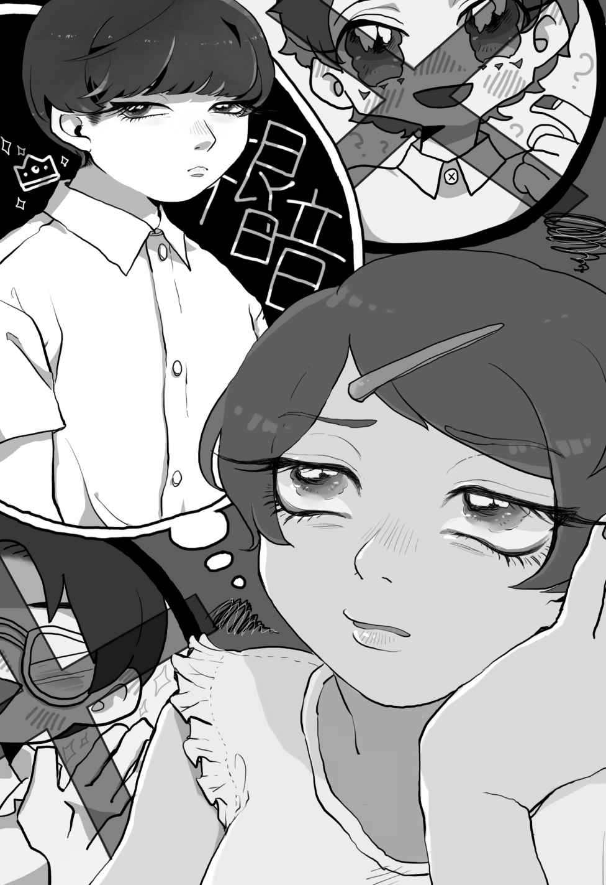

| アパシー 恵美ちゃんの妄想BLパニック | |
| 飯島多紀哉 | |
| シャノン (2017) | |
滾 れ、性☆春
Ｓａｉｄ；Ｓ．Ｓ
「日野先輩～！」
「どうした、坂上？」
放課後の教室。夕日が教室と日野先輩をオレンジ色に染め上げていた。その日、勇気を出して上級生の教室に来て良かった。窓から見える夕日と、それを背景に立っている先輩は嘘 みたいに格 好 いい。
「どうしたんだ、坂上？」
「え？ あ、いえ、なんでもないです。それより先輩、ちょっと聞きたいことがあったんですけど......」
「何か悩み事か？ と、そろそろ下校時間だな。帰りながらでも良いか？ なんだったら、どっか寄ってもいいし......」
「はい！」
「じゃあ、決まりだな」
今、僕に犬の耳としっぽが生 えていたなら、嬉しそうに振られていたんだろうけど、幸いな事に僕には犬の耳もしっぽもない。日野先輩に僕の気持ちがばれる事はない。安心なようで、ちょっと寂 しい......。
そう、僕、坂上修一が同じ部活の先輩である日野貞夫さんに恋心を抱いたのは、新聞部に入って間もなくの事だった。
人よりトロイ僕は何をするのも遅くて、一緒に部活に入った同級生たちに迷惑ばかり掛 けていた。その日も次の校内新聞の編集をしていたんだけど、周りのみんなが次々とノルマをあげていくのに、僕は全然終わらなくて......。一人、一人と同級生が帰っていく中で気が付くと、僕はポツンと一人残されてしまっていた。
「終わった......先輩......あ......」
やっと終わって下級生の作業を上がるのを待っていたはずの加島先輩の姿はなくて、僕は置き去りにされたような寂しさを覚えた。きっと作業があまりに遅くて帰ってしまったんだ。外を見るとすっかり日が暮れて暗くなってしまっていた。
「はぁ......帰ろう......」
僕は編集し終わった原 稿 を、同級生たちが編集し終わった原稿の上に重ねると、帰り支度を始めた。
誰もいないシンっと静まり返った教室。聞こえてくるのは自分の立てる小さな音だけ......僕、新聞部には向いてないのかな？ 少しでも積極性を身に着けようと思って入った部活だったけど、僕には荷が重かったのかもしれない。明日にでも退部届けをだして、もっと僕にお似合いの部活を探してみよう。
オカルト研究会とかどうだろう？
そんな事を考えている時だった。突然、ドアがガチャリと音を立てて開けられたんだ。
僕は驚いてドアのほうを見た。そして、入ってきた人をみてもっとビックリした。
「お？ もう終わったのか？」
「は、はい......」
入ってきたのは三年生の日野先輩だった。思えば、この時僕はこの人を好きになったのかもしれない。
「原稿はこれだな......」
日野先輩は机の上に置かれた原稿を手にとるとしげしげと眺め始めた。一番最初に見たのは、僕の編集した原稿だ。一番上に重ねたんだから当然なんだけど、僕は心臓がドキドキと音を立てるのがわかった。どんな事を言われるだろう？
「これじゃ駄目だな」って怒られるのか、それともなんの反応もなく素通りされるのか......原文は僕が書いたものじゃなくても、編集した事によって、ある意味僕の作品にもなった原稿......それを人に見られるのはとてもドキドキする。
期待と不安。日野先輩は暫く他の原稿にも目を通していたが、おもむろに顔を上げると僕の事をしっかりと見据えた。僕は思わず息を呑 んだ。
何？ どうしてこっちを見るんだ？
「お前がこれの編集したのか？」
そう言って見せらた原稿は、確かに僕が編集した原稿だった。
「え、は、はい」
僕は思わず視線を逸 らしてしまった。きっと「甘い！」「なってない！」そんな言葉が降って来るものだと思ったからだ。怒られるのを承知で顔を上げているなんて芸当は、僕には出来ない。ただじっと嵐が過ぎ去るのを待つだけだ。
でも、日野先輩が言ったのは僕の想像していたものとはかけ離れたものだった。
「よく出来てるじゃないか」
「え？」
僕は思わず顔を上げて先輩を見てしまった。聞き間違い？ でも、僕の目に飛び込んできたのは優しそうな先輩の顔。先輩、......怒ってない。
「今回の一年生は校正もきちんと出来てないのかって思ったけど、お前と......そう、倉田はきちんとしているな。本とか色々読んでいるんだろ？ 誤 字 脱 字 は文章系では死活問題だからな、しっかりやってくれると助かるよ」
そう言って笑顔を見せてくれた。
「あ、ありがとうございます！」
僕は思わずお礼を言ってしまった。その日は日野先輩と一緒に帰った。色々な話をして、日野先輩の話の幅の広さにビックリした。日野先輩は色々な事を知っていて、僕にわかりやすく話してくれた。こんなに楽しく喋 る事が出来たのは初めてかもしれない。
この日を境に、僕は日野先輩とよく話すようになった。部活の事、勉強の事、趣味の事、好きな事、嫌いな事、本当に色々な話をした。
それからというもの、休日に二人で出かけるようになった。最初、本当は二人だけじゃなくて、日野先輩の友達とかも一緒に出かける予定だったんだけど、その日みんな都合がつかなくなってキャンセルしてきて、先輩と二人きりになったのだ。
先輩は「約束ぐらい守れよ、俺の立場がないだろ？」って嘆いていたみたいだけど、その時何 故 か、僕は心が弾 むのを感じた。きっと楽しく休日を過ごせる事に反応したんだろうとばかり思っていた。部活の消 耗 品 の買出しや、ゲーセンに寄ったり、余った時間に映画を見て、感想を話し合ったり。友達とならなんの不自然さもないシチュエーションで、僕一人だけが胸をときめかせていたんだ。
その時は気付かなかったけど......。
話しながら偶然に触 れる手や、肩を叩いたり、時にかけられるプロレスの技、それに他の人に感じないドキドキした気持ちを持つようになったのは直 ぐだった。
そしてそれが「恋」だって事に気付いたのも......。おかしい、僕はおかしい......部活の先輩で、同じ男で、それなのに......こんな気持ちを持つのはおかしいんだ。この気持ちに気付いてから僕は呆 然 とした。
でも、その日から僕と日野先輩は何度も二人きりで会うようになった。
クラスにちょっと気になる女の子はいた。それに同級生や日野先輩以外の上級生には何も感じない。ただ、日野先輩だけが僕の特別になっていた。この気持ちを認めなくて、日野先輩から距離を置こうと思った。一緒に帰っていた放課後、逃げるように一人で帰ってみたり、部活を休んでみたり......。
でも、次の日、日野先輩に声をかけられると、僕の決意とは裏腹に気持ちがどんどん日野先輩に傾 倒 していくのを感じた。
「坂上、どうしたんだ？ 昨日は部活にいなかったな。具合でも悪いのか？」
「最近お前とばかり帰ってたからな、クラスの奴にからかわれたよ『いつもの子はこないのか？』ってね。久しぶりに同級と帰ったけど、あんまり面白くなかったな」
「今日は部活に出るんだろ？」
「お前が言ってたあの本、読んだよ。あれ、面白いな。また何かあったら紹介してくれよ」
「今度やる映画のＣＭ見たか？ また見に行こうな」
「坂上、今度の部活でこんなことやろうと思ってるんだけどさ」
「じゃあな、坂上。また部活でな」
普段の日常会話なのに先輩の声、言葉の一つ一つが僕に染み入って、自覚症状が酷 くなる。この人が、好きだ。大好きだ。この気持ちが抑 えられない。
「坂上？ 坂上！」
「は、はい！」
心配そうに顔を覗 きこんでくる日野先輩のアップが突然視界いっぱいに入ってきて、僕は思わず声を上ずらせた。いけない、思わず物思いに耽 ってしまった。
貴重な先輩との時間。ただ、一緒に帰るってだけでも、大切な二人だけの時間。もうすっかり日が落ちて暗くなって、先輩の顔が昼間ほどはっきりしなくても、並んで歩いている足音と、声、そして微 かに感じる体温。二人の大切な時間。
「えっと、この前貸した本の事でしたよね？ 続きあるんで今度持ってきますね」
「ああ、頼む」
嬉しそうに笑う笑顔。格好良いと思うのは惚 れた弱みって奴なのかな？ そんな事を思いながらぼうっと先輩を見ていると、先輩が心配そうに声をかけてきた。
「どうした？ お前なんか変だぞ？ 熱でもあるのか？」
「え？ 熱なんてありませんよ」
「本当か？ なんかしょっちゅうどこかに意識飛ばしてるみたいだし、どれ......」
伸ばされた手、さらっと掻き揚げられる髪、そして......。コツン......
「!!」
視界がぼやけるくらいのアップ。そして額には硬いけど温かい感触。
「熱はないみたいだな......」
離れていく熱と、日野先輩の顔。掻 き揚 げられていた髪を元に戻す時の先輩の手が優しいと感じたのは僕の気のせいだろうか？
「と、突然何をするんですか！」
「何って？ 熱を測っただけだろ？」
熱を測っただけって......それだったら額に手を当てるだけでいいんじゃないか？ 額と額をくっつけるのって......。
いや、僕が日野先輩にこんな気持ちを持っているから不自然に感じるだけなのかも......。きっと、きっとそうだ。
「驚かさないで下さいよ」
「なんだよ。キスでもされるかと思ったのか？」
「キ!?」
キス!? そんなことは考えてもみなかった。僕は先輩にとってはただの後輩で、男で、そんな対象になるわけないってわかってる。
先輩はからかっているんだ。後輩として僕を......これが女の子だったらどうなんだろう？先輩はそのままキスをしたのかな？ 僕が女の子だったら、キスしてくれたのかな？ 僕は一瞬、自分と先輩のキスシーンを思い浮かべて、頭が沸 騰 するかと思うくらいの恥ずかしさを感じた。
「な、何言ってるんですか、やだなぁ、冗談が過ぎると僕だって怒りますよ？」
頬 が熱くなるのを感じながら、僕は必死に取 り繕 った。自分の邪な気持ちに気付かれないように、必死だった。普通の後輩、普通の後輩......僕は必死に自分の心の中でそう唱 え続 けた。
僕が先輩に恋心を抱いているってばれたら、きっと先輩は気持ち悪がって近づかなくなる。僕を遠ざけようとする。それが常識。男が男に恋心を抱くなんて異常なんだ。でも、僕を嫌 悪 の表情で見てる先輩を想像しただけで、僕は胸が苦しくなった。そんなのは想像するのも嫌だった。それだったら今まで通り、ただの後輩として先輩の傍 にいたい。
僕は一生懸命、普通の後輩として演技し続けた。
「冗談じゃなかったらいいのか？」
ふいに先輩は真面目な顔を見せた。冗談じゃなかったら......冗談じゃなかったらなんだと言うのだろう？ 冗談の反対は本気？ 僕は軽いパニックになっていた。
「冗談じゃなかったら......って」
「本気ならいいのか？」
「せ、先輩？」
先輩が僕の腕を掴 んで逃げられないようにする。後ずさろうとするのに、足が言う事を聞かない。日野先輩が何を言おうとしているのか、理解できない。逃げたいのに、逃げられない、逃げようとしない。
これは現実じゃないのか？ 日野先輩が何か、言ってはいけない事を言おうとしているような気がする......。
「坂上......俺......」
捕まえられた腕、振り払うのは簡単だった。そんなに力は入っていない。だから振り払うのは簡単なはずなのに......。ゆっくりと迫る、先輩の顔。いつもの笑顔じゃない、どこか真剣な 顔。そして......僕は瞼 を閉じた。
神様、どうか夢なら覚めないで......。
Ｓａｉｄ；Ｍ．Ｓ
「よう、坂上......」
「新堂さん......」
僕は突然声を掛けられて、びくりと肩をすくめた。
ここは放課後の部室。僕は部活が終わってもクラス委員で押し付けられた冊子作りが終わらなくて、この部室で作業を続けていた。なぜなら、今僕はある人物を避けていたからだ。
教室を離れれば顔を合わせないかもしれない。そう思ったのが間違いだった。彼はどこにでも現れる。神 出 鬼 没 とは正に彼の行動を指すのかもしれない。
「な、何の用事ですか？ 日野先輩ならもう帰りましたよ？」
僕は出来る限り冷静さを装って言った。この新堂さんは日野先輩の友達で、よく部室に遊びに来たては日野先輩と他愛ない話に花を咲かせていた。
僕は、この人が最初苦手だった。彼の纏 っているオーラがあまりも危険で、僕みたいな一般人が立ち入れる雰囲気ではなかったからだ。きっと彼は、何か自分に不都合があればすぐに腕力を振るう事を躊 躇 わないタイプだと思う。それは、認めるのは悔しいけどひ弱な僕からすれば、恐怖の対象だ。
僕と彼はまったく違う人種。そう思うからこそ、あまり彼には近づきたくない。なのに、何故か新堂さんは何かにつけて僕に話しかけてくる。帰 路 についているときも、部活の最中でも、廊下ですれちがっても、それに時々僕の教室にまで来たりする。どうしてだか、理由はさっぱりわからない。
「ほう、それは好都合だな......」
僕は、一瞬自分の耳を疑った。
好都合？ それって、どう言う意味だろうか？ 新堂さんはにやりと笑うと、後ろ手にドアに鍵をかけた。ガチャリと、閉まった鍵の音に僕の嫌な予感は大きくなった。
「何か僕に用ですか？」
僕は酷 く不安な気持ちになった。新堂さんの目が、まるで獲 物 を見定めた獣の瞳に似ているからだ。それに比べ僕の気持ちは、さながら逃 げ惑 うしかない草食動物だろうか？
「お前、日野と付き合ってるだろ？」
「っ!! な、何を言っているんですか？」
僕は息の止まるような衝 撃 を受けた。声が震えるのが自分でも良くわかった。
「声が震えてるぜ？」
そう言いながら、新堂さんはゆっくりと僕に近づいてくる。思わず席を立って、奥へと逃げる。危険、危険と警 鐘 がうるさく鳴り響いている。
部活の唯一の出入り口は新堂さんの背後に塞がれている。僕は野獣に追い込まれたウサギも同然だ。逃げなくちゃ、逃げなくちゃ......そう思って視線を泳がせる。その様子に気づいて、新堂さんが笑みを深める。
「なんだ、図星かよ......カマかけてみたんだが、本当に図星だったとはねぇ。これは、傑 作 だぜ！ 日野の奴、最近ノリが悪いって思ってたんだよ。で、女でも出来たかと踏んでいたんだけどよ、奴の傍にそんな影はなかったが、代わりにあいつの傍をうろちょろしてんのがお前だって気付いたんだよ」
新堂さんはどんどん距離を詰めてくる。まるで弄るような速度で、僕もじりじりと後退する。でも、そんなに広くはない部室だ。直ぐに背中が窓ガラスにぶつかってしまった。
「!!」
もう逃げ場がない！ 僕は窓際に追い込まれた。
バンッ!!
「ひっ！」
僕は耳元で、激しく音を立てて震えたガラスに驚き、反射的に身をすくませた。ガラスは新堂さんが強く手を打ち付けたことで、ビリビリと悲鳴のような音をあげたのだ。僕の動きを封じるために突き立てられた新堂さんの両腕に行く手を阻まれ、ただ震えることしか出来なかった。薄い唇が酷 薄 に歪 められる。
「信じられねぇな。本当にお前が、あの日野を？ いったいどんな手を使ったんだよ？」
「そんな、日野先輩とは......」
「なんでもない？ そう言いてぇんだろ？」
コクリ......と小さく喉 がなったのがわかった。
新堂さんの射るような視線から目を逸らす事が出来ない。確かに、あの帰り道、僕は日野さんとキスをした。だけど、あれだけだ。あの後、僕は日野先輩を押しのけて家へ帰ってしまった。後ろで呼び止めるような日野先輩の声を聞いた気がしたけど、足を止める事はできなかったんだ。
その日は心臓がドキドキ鳴って、眠れなかった。寝不足の頭を抱えて学校に行ってみると、日野先輩の態度は何も変わっていなかった。いつものように、片手を挙げて「よう」っと朝の挨 拶 をしてくれた。......キスしたくせに。
僕はその姿を見てほっとしたような、がっかりしたような複雑な気持ちになった。
あれは夢だったんだろうか？ でも、それにしては唇にリアルな感触が残っている。先輩の香りも、あの近すぎるくらいの気配も......全部はっきりと覚えている。
「何、顔赤くしてるんだよ？」
新堂さんの声で現実に立ち戻る。そうだ、今は思い出している場合じゃないんだ！
「どうせ、エロイ事、思い出してたんだろ？」
そう言って、顎 をすくわれた。顔が一段と近くなる。
「やめっ！」
首を振り、新堂さんを避けようとするが、僕の顎を捕 らえた手はびくともしなかった。
「んんっ！」
愕 然 とした。僕はあまりのショックに目を閉じる事すら出来なかった。日野先輩とは違う、香りがした。これって、男の汗が染み込んだマットの臭い。
ドンッ！
「一体何をするんですか！」
僕は嫌悪感を感じるがまま、新堂さんを力いっぱい押し退けた。押されて無様にひっくり返ってくれればいいのに、僕にそこまでの力はない。塞 がれていた唇を開放させるのがやっとだった。僕と新堂さんの間に、ほんの少しだけ隙 間 が出来たくらいだ。
「なんだよ、ただのキスだろ？ ただの。舌も入れてねぇだろうが」
ニヤニヤと笑う顔に殺気が立つ。
「離れてください！」
「そんなに邪 険 にすんなよ」
「いいから離れてください！」
珍しく声を荒げたせいか、僕は酷 い頭痛を覚えた。駄目だ、早く、早くこの場から逃げ出したい。告白して正式に付き合ったわけでもないし、あのキスの意味すら僕にはわからないけど、今のキスで思い知ったのは、僕には日野先輩しかいないということだ。心の中では必死に先輩を呼んでいる。
助けて、助けて、日野先輩！
「少し大人しくしてろよ。無理やりってのも嫌いじゃないが面倒だからな」
「な、なにするんですか！」
僕の両手首は新堂さんの左手で一 纏 めに掴 まれ、自由を奪われてしまった。残っている反撃の手段は足と、口だ。でも新堂さんの位置が近すぎて、いくら蹴 ろうとしてもそんなに威 力 はない。
残るは口......噛み付くでも大きな声を出すでもして......。そんな考えを新堂さんは読んだのか、体全体で僕の動きを封じると、余っていた右手で僕の口を塞 いでしまった。そして、ニヤリと笑う口元が惨酷な言葉を吐き出した。
「別に人を呼んでもいいけどよ。お前のプライドはズタズタだな。男に犯されてる姿を見られるんだからな。ああ、それに来た奴に言ってやろうか？ 最近恋人の日野先輩が構 ってくれなくて寂しいってこいつの方から誘ってきたんです。僕をメチャメチャにしてください、ってな。かわいそうに、日野も良い迷惑だよな」
そ、そんな！ 僕なんかのせいで、日野先輩に迷惑は掛けられない。
「噂なんてもんなは、本当か嘘かなんてどうでもいいんだぜ？ ただ面白ければ、それでだけで十分なんだよ。今回は日野が同性愛ってんで結構センセーショナルな話題になるだろうな。日野もお前も、人に後ろ指 刺 されながら、毎日学園生活を送るのさ」
新堂さんの言葉が、氷柱のように冷たく、僕の心に刺さる。
「黙ってれば、気持ちよくしてやるよ。俺の指の味、忘れられなくしてやるぜ」
そう言って静かに外された新堂さんの右手、でも、僕の唇は震えるばかりで何の言葉も発する事は出来なかった。
「やめっ」
「しーっ、......抵抗すんなよ。物音を聞きつけて人が来るかもしれないだろ？ それとも、お前は人に見つけて欲しいのか？ そのほうが感じるのか？」
「......」
日野さんへの迷惑。それが枷 となって僕から抵抗を奪っていく。
ちょっと前まで直ぐそこにあった日常。それがいつなくなってしまったのか僕にはわからない。ただ、新堂さんの唇が僕の首筋をなぞる感触が、夢ではなく現実だと言う事は、紛 れもない事実なんだ。
Ｓｉｄｅ；Ｎ．Ｋ
『もしかしてお前、不感症か？』
そんな屈 辱 的 な言葉と、新堂さんがシャツを羽織る音を聞いた気がする。さっきまで、二人がもつれ合い、音を立てていた空間も今はシンッとしている。
僕は打ち捨てられた人形のように床に転がっている。乱れたシャツ。下半身は覆うものがなく、とても情けなくてだらしない姿を晒 しているのだろう。でも、体を起こす気になれなかった。僕の左半分は部室の床に触れて、体温が奪われていく。それとともに体中の精気が吸い取られていくみたいだ。
足の間に何かが挟 まっているかのような違和感と、胸の辺りから湧 き上 がる不快感。無理矢理の情事の間、ずっと吐き気と痛みとの戦いだった。
新堂さんは僕の体を色々と触ったり、舐 めたり、時には甘噛みしたりていたが、僕自信はみなぎらせる事はなく、ただ硬く目を閉じ、体を強 張 らせ行為の間中耐え忍んでいた。しばらくして、舌打ちしたのを聞いた気がする。
男の体は正直だと聞いたことがあるけれど、触られても、擦 られても、僕の体が反応する事はなかった。体は僕の気持ちを裏切らなかった。
そして、これで日野先輩の迷惑にならない。その思いだけが僕の慰 めだった。
新堂さんは反応のない僕にすぐに興味が失せたようで、一度満足すると早々に僕の中から出て行き、身支度を始めた。そして、あの言葉を残して彼は部室を出て行った。
「帰らなきゃ......」
どれほど、冷たい床に身を投げ出していただろう。涙と交じりあって頬に張り付いた彼の体液を拭 い、やっと起き上がることが出来たときには、すっかり窓の外は日も暮れて夜になっていた。もともと遅くまで残っていたのだから、仕方ないのかもしれない。億 劫 な体を無理に起こすと、最初に目に留まったのは、投げ捨てられた僕のズボンと下着だった。
「うっ......」
膝を突いて立ち上がろうとした瞬間。僕から溢 れて流れ出る感触に思わずうめき声が出た。新堂さんから吐き出された体液だ。僕の体の奥に吐き出されたものが、体勢を入れ替えた事によって溢 れてきたんだ。それはまだ生温かった。冷えた太腿を、一筋の温かい滴が伝い落ちる。
「そっか、僕......男に犯されたんだよな......はは、......はははは」
今更になって涙が溢れてきた。
どうしてこんな目に会うんだろう？ 日野先輩を好きになったから？ 日野先輩のキスを避けなかったから？ 一体何がいけなかったんだろう？
「あははは......うっく、ふ、ははは......おかしいな、男が男に犯さ......ううっ！」
僕は床に蹲 って泣いた。笑っているのに涙がどんどん溢 れてくる。何に泣いているのかわからなかったけど、ただただ、体が、心が欲求するままに涙を流した。日野先輩を好きになった事への後悔？ 新堂さんへの悔しさ？ それとも、自分自身への不 甲 斐 なさ？
そんなのどうでもいい。ただ、今は泣きたかった。涙が収まらず、僕は何度も何度も目を擦りながら身支度をした。
ともかく、傷つけられた体を隠したかった。それから部室の片付け。窓を開けて換気をした。そして荒れた机や椅子を元に戻して、床に落ちていた情事の後を拭 った。明日、僕はこの部屋に冷静な気持ちで来られるんだろうか？ 床を雑巾で拭っている時も涙は止まらず、されでも、僕は自分が強 姦 された証拠を一つ一つ消していった。
惨めだった。
床掃除が終わると、開け放たれた窓を閉めて、カバンを持って電気を消し、部室に鍵をかけた。まるで自分の記憶も硬く封じ込めてしまえるような重い音を響かせて鍵は閉まった。そして、その鍵を持って職員室へ足を向けた。
途中誰にも会わなかったのが、せめてもの救いだった。職員室に部室の鍵を返し、学校を後にした。歩くたびに体が軋 んで、股間の奥に鋭い痛みを感じたが、それを無視するようにまっすぐ家へと歩き続けた。
その日、僕はバスルームで身体が擦り剥けるくらい力いっぱい洗い続けた。股 間 に手のひらいっぱいのボディソープを塗りたくり、彼の臭いを残らず消そうとした。僕の涙を、熱いシャワーが洗い流してくれた。でも、心に刺さった傷跡は消えなかった。
翌日、僕は学校を休んだ。
ずる休みじゃない。高熱が出て、とても学校へは行けなかった。きっと自分で考えている以上に身も心もズタズタで、動けなかったんだと思う。母さんは「どうしたのかしら？」と首を傾げていたが、僕のただならぬ様子を心配し甲斐甲斐し く世話をしてくれた。その優しさが嬉しかったが、今は一人になりたかった。その意思を告げ、母さんを部屋から追い出した。
昼間の住宅街はとても静かで、僕はゆっくりと目を閉じた。まだ高鳴る鼓動を抑えようと、深く息を吸った。高熱で朦 朧 とする意識の中、何度も新堂さんが現れては薄ら笑いを浮かべ消えていった。そんな悪夢と戦っているうちに、いつしか僕は深い眠りに堕ちていった。
目が覚めると、夕方なのか部屋が少しオレンジ色に染まっていた。殆 ど丸一日眠っていたみたいだ。寝すぎたからか、まだ熱があるのか、頭がぼうっとする。胎児のように身を丸め眠っていた体勢から、仰向けになって天井を見た。
「起きたのか？」
その声を聴いた瞬間、僕は我が目を疑った。僕の視界に飛び込んできたのは......。
「日野先輩!? ど、どうして先輩が!?」
「俺が来ちゃ、おかしいか？ 可愛い部活の後輩の見舞いと先生からの用事を」
「わざわざ、すみません」
僕はベッドの中で恐縮してしまった。そして隠れるように顔は半分を布団で隠す。本当は昨日あんな事があったから会いたくなかった。でも、会えて嬉しい。会いに来てくれて正直に嬉しいと思っている自分がここにいる。
「ま、先生の用事ってのは方 便 な。そうすれば坂上に会う理由が出来るだろ？」
そう言ってウィンク。普通だったら気障だ。って思うのに、先輩がすると何故か許せてしまう。本当、僕はこの人の事が好きなんだ。僕は、頬が紅く染まるのがわかった。
「あ......りがとうございます」
なんだか気恥ずかしくて、言葉の後半は殆ど音になっていなかった。でも、先輩が来るのなら、もっと部屋を掃除しておけば良かった。
「でも、軽そうで良かったよ。この分なら明日は学校に来られそうだな？」
「はい」
先輩は、僕に何があったかなんて知らない。だから、いつもと変わらない笑顔を見せてくれている。新堂さんは何も言わなかったんだ。良かった。
「それから......この前の事だけど......」
「この前？」
日野先輩が急に神妙な顔をして僕を見つめてきた。この前？ この前って......。
「あっ！」
「思い出したか？」
僕は顔が熱くなるのを止められなかった。思い出した、帰り道で突然された、キス。
「あの、あれは、あれはっ」
慌てて言葉が上手く発音できない。
「あれ、冗談だったんですよね？ す、すみません、僕、ちょっと混乱しちゃって」
きっとあれは行き過ぎた冗談。先輩が僕なんかに本気でキスするわけない。だから、あれは冗談。そうに決まっている。......少し、残念だけれど。
「駄目ですね、これからはもっと上手く冗談を返せるようにします。すみません」
謝るたびに、「冗談だったんですよね」と言う度に胸が痛んだ。そう、期待しちゃ駄目だ。
「何言ってんだ、坂上」
「え......」
怒ったような先輩の声、表情。期待しちゃ駄目だ。これは僕が異常なんだから、先輩を巻き込んだら駄目だ。僕の、ただの片思いなんだから。
「いつ、俺が冗談だって言った？」
「で、でも、そうじゃないと......」
期待しちゃ駄目。
「俺は本気でお前にキスをした。順番が逆になってしまったけど、俺はお前が好きだ」
「先輩......」
「気持ち悪いと思うかもしれない、でも、これが俺の正直な気持ちだ。俺はお前と一緒に歩きたい。例え誰の理解を得られなくても、俺たち二人の荒 野 を目指そう。そして、何もない大地に俺たち二人の花を咲かせるんだ。俺とお前だけの世界、一緒に描かないか？」
僕は何も言えなかった。これって、プロポーズ？ 嬉しくて、嬉しくて......その気持ちを言葉にすることができなくて、僕は先輩に抱きつき、身を任せた。
「坂上......」
そんな僕を、抱きしめてくれる先輩。このまま、時よ永遠に止まってしまえ。
「これ、夢、じゃないですよ......ね？」
「夢なら......永遠に覚めなければいい。俺は、お前を抱きしめて眠り続ける」
「好、きです......僕、先輩のこと、が......」
涙が邪魔をして上手く言葉にならないけど、それでも精一杯に僕の気持ちを伝えた。
「チクショウ」
「先輩？」
「お前が病み上がりじゃなかったら、このまま押し倒せるのにな」
「......先輩」
「でも、今はお前の全快を願っている。だから、俺のためにも早く元気になれ」
先輩は、僕の涙を啜 るように目じりにキスをしてくれた。そして、嬉しさに気が昂 っている僕をベッドに寝かし付け、帰っていった。もっと一緒にいて欲しかったのに、これが夢じゃないと、もっと信じさせて欲しかったのに......。
僕は寂しさを感じながらも、明日学校で先輩に会えるかと思うと心が弾んでしまい、興奮して眠れなかった。
Ｓｉｄｅ；Ｓ．Ａ
翌日、熱はすっかり下がり、僕の体調は回復していた。母さんは、知恵熱だったのかしらと笑いながら朝食を出してくれた。いつもならむっとして反論する所だけど、今日はそんなに反発を覚えなった。それより早く先輩に会いたかった。
はやる気持ちを抑えて、僕はいつもと同じ時間に家を出た。体は小さく悲鳴を上げていたが、先輩に会える。そう思うだけで、足取りは軽くなった気がした。僕は歩きながら昨日の事を思い出していた。
『お前の事が好きだ』
そう、昨日言ってくれた。僕に......僕に言ってくれた。諦 めていた恋心が成 就 してしまったんだ。か、顔を上げて歩けない。僕は赤くなる頬を隠すように俯 きながら歩いた。下を見ながら、しかも頭の中は日野先輩でいっぱいだった。だから、前方不注意で前を行く人の背中にぶつかってしまった。
「す、すみませんっ」
「よう、坂上」
僕は、ぶつかってしまった背中に慌てて謝った。
「ひっ！」
でも、振り返った顔を見て息が止まった。そこにいたのは新堂さんだった。
「なんだ、思ったより元気そうじゃないか？」
にやついた、顔。あの時と同じ。日野先輩に軽くしてもらった気持ちが一気に引き戻される。あの悪夢のような放課後へ。
「し、失礼します！」
僕の熱くなっていた頬は一気に血の気が下がり、白くなっていたはずだ。いや、もしかしたら青くなっていたかもしれない。僕は一気に緊張して振るえる体でその場から逃げた。
追ってくる気配はない。まだ生徒の少ない通学路とはいえ、新堂さんがこんな昼間から何かするとは思えない。思えないけど、体が、心が、理性の声を聞いてくれない。
まるで自分の体を抱きしめるように、カバンを胸に抱きしめ、僕はともかく逃げた。新堂さんに近づきたくなかった。走って、走って、走って、息が苦しくなったけど走って、途中他の生徒とぶつかったような気がしたけど、無視して走り続けた。
ドン！
今度は後ろを振り返りながら走っていた性で、また誰かとぶつかってしまった。ありえない事だとわかるのに、一瞬新堂さんの顔が過ぎる。
「ひっ」
僕は体を硬くした。
「おいおい、どうしたんだ？ そんなに慌てて」
「日野先輩っ!?」
目の前にいたのは日野先輩だった。僕はどうやら日野先輩に正面からぶつかったみたいで、偶然とは言え、体勢は抱きとめられるような格好になっていた。
「おはよう、そんなに急いでどうしたんだ？」
落ち着いた声、深く響く何気ない言葉が、恐怖で強 張 っていた僕の体を優しく解した。
「え？ いえ、その......」
新堂さんから逃げてきた。そう正直には言えなかった。僕の顔は自然と俯いた。日野先輩と新堂さんは友達で、なんだかんだ言って仲が良いのは見ていてわかった。ここで新堂さんに強 姦 されて、なんて言えない。日野先輩を苦しめる事になる。新堂さんは僕を不感症だって言ったんだ。もうこれ以上僕には構 ってこないはずだ。だから、あの事は忘れて、僕が......僕だけが我慢すればいいんだ。
正直に答えることの出来ない僕は誤魔化す事もできないから、家を出るときの正直な気持ちを口にした。
「あの......先輩に、早く会いたくて......」
どきどきしながら、日野先輩を覗 き見た。その時の日野先輩の笑顔は忘れられない。蕩 けるように甘い......そう思ったのは僕の気のせい？
「はぁ、おしいな......」
「え？ どうしたんですか？」
「ここが通学路じゃなかったら思いっきり抱きしめてキスしたのに」
「ひ、日野先輩!?」
僕は慌てて周りを見た。見慣れた制服を着ている見知らぬ生徒が同じ歩行へと向って歩いている。そんなに人数はいない、誰もこっちに注目していないのに、ほっとする。
「突然、何を言い出すんですか......びっくりするじゃないですか」
「俺の正直な気持ちだけど？」
にっこりと微 笑 んだ顔が本当に嬉しそうで、ここが通学路なのがちょっと残念だった。そして僕たちは並んで学校へと向った。
朝から日野先輩に会えて嬉しいと告げると、先輩も笑顔で明日から一緒に登下校しようか？ と提案してくれた。とても嬉しくて幸せだった。その後、学年で階が分かれている僕らは階段まで一緒に歩き、離れ離れになった。
「また放課後に」
そう言って手を振ってくれた先輩の顔が頭から離れない。今日は幸せな気分で授業を受けられそうだ。
でも体は正直で、二時間目が終わる頃には体調が悪くなってきた。周りのみんなも心配してくれて、僕は保健室で休む事にしたんだ。一緒について行こうか？ そういってくれる友達を断って僕は一人で保健室に向った。
保健室に向かう途中も、体の調子はどんどん悪くなっていく。あまり意識しないようにしていたのに、股 間 の奥に鈍痛が走る。朝、新堂さんに会ってしまったからかもしれない。歩くのも酷く辛かった。
「すみません......あれ？」
やっとたどり着いた保健室は、しんとして誰もいなかった。室内を見回すと、三つ並んだベッドのうち、一つがカーテンで仕切られていて誰か休んでいるようだった。
先生の姿は見えない。もしかして、先生が仮眠してる？ そんな噂をしていたのはクラスメイトの誰だったっけ？ 保健の先生は生徒のいない暇な時にベッドで寝ているんだってさ。そんなの冗談だろうけど、実際に先生の姿は見えないし。いつもだったら好 奇 心 を抑えきれずにカーテンの隙間から覗くくらいはしたかもしれないけど、今は胃の辺りを突き上げられるような痛みと体調の悪さに、そんな気分にならなかった。
僕はふらふらと先生が使っている机に近づいた。そして置いてあった丸椅子に座ると「はぁ」っと溜め息が出た。もしかしたら熱が出たのかもしれない。保健の先生は何処に行ったんだろう？ 友達に来てもらえば良かったかな。職員室に聞きに行くのも億 劫 だ。
「具合が悪いんですか？」
ふいに声をかけられ、僕は声の主を探した。すると、閉まっていたカーテンが少し開いて、そこから一人の男子生徒がこちらを見ていた。
「あ、はい。あの、先生は......」
「保健の先生なら、今日は学会で留守ですよ」
「そうなんですか......」
どうしよう。つまり、ここで待っていてもどうにもならないって事だ。
「熱があるみたいですね。はい、体温計です、計ってください」
「ありがとうございます」
僕が礼を言うが早いか、彼はカーテンを払い滑 るような足取りで僕に近づくと、蛇 のように手を動かし僕の口に体温計を差し込んできた。何と言う素早さ。
「辛いようでしたら、僕の隣のベッドで休んでください」
「でも......」
一瞬、僕は躊 躇 した。なぜなら、先生の許可がないとベッドは使えない。それなのに、男子生徒はさも当たり前のベッドを使っていたし、それだけでなく彼には僕にベッドを勧 める権限はないはずだ。返答に困る僕の顔色を、彼は即座に読んだようだ。
「大丈夫ですよ。ここは半分僕の住 処 みたいなものです。保健の先生とも仲が良いですから。それに、具合の悪い生徒にベッドを提供したくらいで怒るような人じゃありません」
「そうですか。それじゃあ、お言葉に甘えます」
僕は彼の勧 めをありがたく受け、ベッドへと体を横たえた。横になろうと足を開いた瞬間、またも股間に激痛が襲った。一瞬、顔を苦痛で曇らせるも、すぐに何事もなかったように装い、布団に体を潜り込ませた。そして、身を丸まらせ股間を手で覆うように擦る。
ピピピッと小さな電子音が鳴った。
「三分経ちましたね。体温計を見せて下さい」
「はい」
僕は彼に言われたとおり、口から体温計を抜こうとした。すると、彼の指がすっと伸び、僕の口から体温計を抜き取った。僕の唾 液 で汚れた体温計に、彼はそっと顔を近づける。
「三十七度五分......平熱は何度ですか？」
「たぶん三十六度二分くらい......」
「微 熱 ですね。でも、微熱ほどつらいものです。では、この薬を飲んでください」
いつの間に用意されたのか、差し出されたのは水の入ったコップとカプセルだった。
「解熱剤ですよ。飲んで大人しくしていれば熱は下がると思います」
「はい」
僕は言われるがまま薬を飲み、再び横になった。横になり、改めて深く息を吸う。一瞬瞬 きをすると、いつの間にか、視界から彼の姿は消えていた。
部屋の隅からカチャカチャと何かの器具が触れ合う音と、水が流れる音が聞こえてきた。きっと体温計を消毒したり、コップを洗ってるんだろうな。ずいぶんと几 帳 面 な人だ。でもすぐに音は聞こえなくなった。そしてカーテンの引かれる音がして、僕のベッドは小さく切り取られた空間に遮断された。彼が気を利かせてカーテンを引いてくれたのだ。
これでゆっくり眠れる。そうなる、はずだった。
「あれ？」
カーテンを閉め、またベッドへ戻ったんだろうと思っていた彼が枕 元 に立っていた。
「カーテンは閉めました。ここには僕たち以外はいません」
「そうですね......」
突然、脈 絡 もなく彼が話しかけてきた。口元から見え隠れする赤い舌が蛇みたいだ。
「僕は口が堅いとお約束しましょう。ズボンを脱いでください」
何て大胆なことを言い出すんだ、この人は。
「なんですか、いきなり!?」
「ベッドに横になるだけでもつらいんでしょう？ その腰の庇 い方を見ればわかりますよ。ずいぶんとお盛んみたいですね、ひひひ」
「っ!!」
「ほんの冗談ですよ。その腰の庇い方で、あなたがヴァージンだったことはわかりますから。でもね、このまま放っておくと、括 約 筋 が馬鹿になって大便垂れ流し......なんてことにもなりかねませんよ。そうなれば、あなたの恋人はどう思うでしょうね。まぁ無理強いはしませんが......」
そんなことを言われても、素直に見せられるわけがない。だって......まだ先輩にも見せたことないのに。
「薬だけ、下さい。自分で......」
僕は否定も肯定もできなかった。でも薬を求めた時点で、彼の言葉を認めているようなものだ。
「言葉を返すようですが、あなたは自分の傷の程度を理解しているのですか？ 患部がどのような状態か、気にはなっているものの不安で確認もしていないのでしょう？ さあ、僕を信じなさい。気を楽にして、身を任せるんです。さぁ......」
「............」
僕は、何も言えず、ただこくんと小さく頷 き、ベルトを外した。ズボンのホックを外したものの、まだ躊 躇 している僕がいる。それを見透かすように彼の手がチャックに伸び、ゆっくりと下ろしていく。半分ほどチャックが下ろされたとき、僕のズボンはすとんと脱げ落ちた。
彼の指は僕の下半身を覆う下着に掛かり、密着した布地と肌の合間に滑り込んできた。彼の指はしなやかで柔らかく、それが触れるだけでまるで麻酔薬のように僕の下半身を痺れさせ自由を奪っていく。彼はなれた手つきで、僕の下着をゆっくりとずらしていく。
半開きになった唇から声にならない声が漏 れるころ、僕の下半身は彼の前に曝 け出 されていた。でも、それを確かめる勇気は僕はなく、上を向いたまま硬く目を閉じていた。
「君、ずいぶんと立派なものをお持ちですね。でも、今僕が見るべきものは、その聳 え立ったシンボルじゃありませんから。さあ、後ろを向いてその可愛い膨らみを見せてください。ピンク・ヒップ・ボーイ」
僕は後ろを向くと、両手をベッドに付き四つんばいになった。
それからの数分間、僕は出来るだけ何も考えないようにし、彼の治療に身を任せた。僕の臀 部 を割り、彼の指が中には言ってくるのがわかる。僕の脳裏には、日野先輩と新堂さんの顔が代わる代わる浮かんでは消えていく。
あまりの恥ずかしさに、僕は頭からすっぽりと布団を被った。
「やはり、数箇所裂傷していましたよ。しかし、よくこれで歩けましたね。......可哀相に。しばらくの間、固い椅子には座らないほうがいいでしょう。せめて傷が塞 がるまではドーナツ型クッションを使用することをお薦めしますが......さすがに学校では恥ずかしくて使えませんか？ とりあえず、今塗っておいた薬を渡しておきますから、後で恋人に塗ってもらうといいでしょう」
「僕......恋人なんていませんから」
「別に詮索するつもりはありません。それに、このことは誰にも言いませんよ。安心してください」
「ありがとうございました。あの、僕一年の坂上修一って言います。あなたのお名前は......？」
そういえば、まだ彼の名前を聞いていなかった。彼は指に付いた薬を拭 いながら、僕に微笑みかけた。
「僕は、二年生の荒井昭二です。それより、そろそろ服を着たらどうですか？ そのいきり立ったものは、健全な青少年には目に毒ですよ」
「あ！ ......ご、ごめんなさい」
忘れてた。僕は慌てて下着に手をかけた。
「坂上君、せっかく出会ったのですから、これを機に仲良くしましょう。今後ともよろしく」
そういって握手を求めてきた新井さんの手を僕はそっと握り返した。
「僕の方こそ、よろしくお願いします」
気遣いを見せてくれた荒井さん。確かに彼は口が堅いようで、何かと頼れる先輩だった。それからというもの僕たちは、よく話をするようになった。荒井さんは保健室にいなければ屋上にいる事が多くて、僕は日野先輩と会わない時間は新井さんと過ごすようになった。
Ｓｉｄｅ；Ｔ．Ｈ
荒井さんという頼れる相談相手も得て、日野先輩とも心を通わす事が出来た僕には、平穏な日々が戻ってきたような気がしていた。
荒井さんとは、よく屋上で会った。彼は屋上が好きみたいで、よく姿を見かけた。そしてその屋上で彼は色々と僕の相談を聞いてくれた。彼は本当に豊富な知識を持っていて、僕に適切なアドバイスをしてくれた。
そしていつしか、僕は新堂さんの名前こそ出さなかったものの、新井さんと知り合うきっかけになったあの悪夢のような出来事を話していた。
日野先輩には話せない。でも、一人で抱えるには、僕にとっては大きすぎた、あの事件。荒井さんは最初に言ったように口が堅かった。そして、何より静かで、日野先輩とは違った意味で心 惹 かれ安心できた。
僕が同性の日野先輩が好きだという事も、同性に強姦された事も、偏 見 を持つ事無く接してくれた。僕の中で荒井さんは大事な存在になっていた。
荒井さんは僕の話を黙って聞いてくれ、話が終わると静かに口を開いた。
『日野さんは、その事を知っているんですか？』
そんな、......先輩にはとても言えない。
『僕は話したほうが良いと思いますよ』
でも、正直に言って日野先輩に嫌われたら......。嫌われたら、僕は死んでしまう。僕にとって、先輩がすべてなのに。先輩の支えがあるからこそ、今僕は生きていられるのに。
『君の話を聞く限り、彼には正直に話したほうがいいと思います。大丈夫。きっと彼なら受け止めてくれますよ』
あの朝以来、新堂さんとも出会うことなく、先輩との仲も良好に進んでいる。この前は一緒にデート......人から見たらただ仲の良い友達が遊んでいるだけに見えるかもしれないけど、日野先輩は「デートしよう」って誘ってくれた。とても楽しい一日で、時が経つのがあまりにも早く感じられた。
でも、平穏な日々は仮 初 で、ガラス細工のように脆 く、ふとした反動で壊れそうなものだった。そして、その日はすぐにやってきた。
「よう、坂上」
「......新堂さん」
呼び止められたのは、荒井さんに会いに屋上へ向う途中の階段だった。僕は新堂さんから目を逸らさないように睨み付けた。負けちゃ駄目だ。大好きな先輩を守るためにも。もっと僕が強くならなきゃ。
『逃げては駄目ですよ。そういう場合は距離を測りつつ退路を確保するんですよ』
荒井さんの静かな声を思い出した。僕は冷静に自分の状況を確認した。ここは階段で、進路と退路、二つの選択肢しかない。下には新堂さん。上には屋上へ続く階段。そして屋上には荒井さんがいる。僕は少し迷ったけど、屋上へ向って走った。ともかく袋小路とはいえ、狭い場所にはいたくなかった。
新堂さんが僕の後を追いかけてくるのが気配でわかった。
バンッ！
乱暴にドアを開け放ち、屋上へと躍り出た。
荒井さん......！
急いで彼の姿を探したけれど、こんなときに限って姿が見えない。後ろからは、けたたましく鳴り響く足音が近づいてくる。まずい。僕は、急いで出入り口から離れたフェンスまで走り、それを背にして立った。僕が振り向くと同時に、新堂さんが階段から姿を現した。
「もう、鬼ごっこは終わりか？」
新堂さんはぎらつかせた目とは対照的に、楽しそうな笑みを浮かべている。そして出口にもたれかかったまま、一向に近づいてくる気配がない。誰もいない屋上に逃げ場はない。もし逃げるとしたら......それはフェンスの外。飛び降りるしかない。でも、それは死を意味する。だから、新堂さんは焦る様子もなく、せせら笑っている。
どうしよう。僕は恐怖と戦いながら、必死に声を張り上げた。
「一体何の用ですか！」
「そんなにツンツンすんなよ、坊や。それより、お前まだ日野と切れてないんだってな？」
「......」
下卑た笑み。とっても不快だ。
「不感症のお前が、どうして日野と別れないのか不思議なんだよ。あいつは、そういう趣味か？」
「そんなこと、あなたには関係ないじゃないですか」
「へえ、付き合っている部分は否定しないんだな？」
「......」
ものすごく嫌な感じだ。あの放課後の部室と同じ空気の匂いだ。でも、あの時の僕と今の僕は違う！ 今は日野先輩を裏切らない為にも、もう新堂さんには屈したりしない！ 負けるもんかっ！
しかし、どんなに僕が凄んで見せたところで、そんなものが通じる新堂さんじゃなかった。新堂さんは馬鹿にしたようなニヤニヤ笑いを崩さず、とうとう僕の方へと足を踏み出した。
「俺の下で健気にも強がっていたお前が、妙に忘れられなくてよ。認めたくないが、そういうお前が可愛くなってきちまった。なあ、俺の犬になれよ。立派な飼い犬に調教してやるからよ。すぐに俺が忘れられなくなって、尻尾振ってじゃれ付いてくるさ。愉しもうぜ、坂上」
背筋を悪寒が駆け抜けた。誰が、新堂さんの思い通りになんかなるものか。そんなこと、させるもんか。僕は、僕は......！
「ふざけるな！ 僕は日野先輩のものだ！」
僕は衝 動 の赴 くままに叫んでいた。
「はっ！ 今さら、カマトトぶってんじゃねえよ！ 誰でもいいから抱かれてえんだろ？ 寒空に震える捨て犬みてえによ。さっさと素直になっちまえよ、坂上!!」
一気に間合いを詰めてきた新堂さんが、おおきく腕を振り上げる。
殴られる！
その瞬間、僕は咄嗟に頭を庇 い、目を強く瞑 った。
「............」
時間が止まったのだろうか。覚悟したのに、思った衝撃は襲ってこなかった。どうしたんだろう。とても怖かったけれど、震える瞼をゆっくりと開けていく。そして何が起こったのか自分の目で確認した時、僕は涙で視界が滲 むのを感じた。
「おい、新堂。いい加減にしてもらおうか？」
新堂さんと僕の間には、見覚えのある背中が立っていた。そして新堂さんの拳を自分の手のひらで受け止めている。
これって、夢？ ......どうして、どうして、あなたは僕の欲しい言葉をくれるんですか？
「日野、先輩」
嬉しくて、言葉が震えた。僕は、日野先輩の前では泣いてばかりのような気がする。でも、......でも、許してくれますよね。そんな情けない僕の傍に、ずっといてくれますよね。僕は、永遠に日野先輩が......大好きですから。
「なんだよ日野、今回は来ちまったのか」
新堂さんは日野先輩の登場にも動揺した様子はなかった。相変わらず不敵な笑みを浮かべ、むしろこの事態を愉しんでいるように見える。どうして？ 新堂さんは、どうしてそんなに余裕を見せられるんだ？ 僕の位置からは、日野先輩の背中が邪魔して表情が見えない。
「今回？ なんの事だ？」
「はっ！ 坂上から聞いてねぇのか？ 大した恋人だな！」
まさか！ ばらされる！ あの、日野先輩だけには知られたくない悪夢をっ！ 僕は必死になって制止の声を上げた。新堂さんの口を塞ごうとしたけど、それは日野先輩に阻 まれた。
「やめっ！」
「落ち着け、坂上！」
先輩は、すぐに振り向き僕を力いっぱい抱きしめてくれた。嬉しい。嬉しいです、先輩。
でも、落ち着いてなんていられない。知られたくないよっ！ 大好きな日野先輩に嫌われてしまう！ せっかく好きだって言ってもらえたのに、嫌われたくないよっ！
「相変わらず、えげつない手段を使っているんですね、新堂さん」
パニックになった僕の耳に静かな、でも強い声が聞こえた。
「荒井さん......」
荒井さんが、出入り口から姿を見せた。荒井さんはいつものように優しく笑っていたけれど、その口調はとても強かった。
「日野さん、ちゃんと間に合ったんですね」
「ああ、助かったよ」
「日野先輩？」
この二人、面識があったんだろうか？ まるでお互いを知っているかのようなやり取り。そんな僕の問うような視線に気付いたのか、日野先輩が説明をしてくれた。
「荒井と知り合ったのは、ついこの間だ。坂上の事で話があるって言われてな。『坂上君が大切なら片時も目を離さないで下さい』ってイキナリ面と向って言われたから驚いたよ。あんまり束縛しすぎるのは可哀相だとおもっていたからさ」
そんなことないです。もっときつく縛ってください、先輩！ がんじがらめに束縛してください。そうじゃないと、僕、どこかへ行ってしまいそうですから。
「でも荒井は言ったんだよ。『大切なら、たとえ犯罪者になっても傍を離れるな』ってね。そう言われた時、目から鱗 が落ちたよ。俺はお前のことを考えるあまり、自分の気持ちに嘘をついていたんだ。俺は、お前を独り占めにしたい。絶対に離したくない」
......嬉しい。本当に離してほしくない。その気持ちを声を大にして叫びたい。
でも、先輩はそこで言葉を切ると、僕を抱きしめていた手を離し新堂さんに向き直った。
「たとえ俺は罪を犯しても、お前を守る。そして俺の愛を証明する。いいよな、坂上？」
顔は新堂さんのほうを向いていたけれど、凛とした強い声が僕の耳に飛び込んでくる。その言葉で、僕はもう平気です。今 直 ぐその背中に縋 りついて泣いてしまいたい！
「犯罪者？ 日野、まさかお前、俺を殺すとでも言うのか？」
「ああ、必要ならお前を殺すよ、新堂」
一気に張り詰める空気。緊張感。伝わってくる覚悟。日野先輩の言葉に嘘はないと思う。でも、その言葉に真実味がませば増すほど、僕の高揚感は一気に冷めていく。このままでは本当に日野先輩が犯罪者になってしまう！ 止めなくちゃ！ 先輩を止めないと！
「日野さん」
その時、僕より先に言葉をかけたのは荒井さんだった。
「坂上くんを守る姿勢、確かに見せてもらいました。でも、新堂さんは僕の獲物です」
前半のくだりは優しく緩 やかに、後半のくだりは鋭く冷酷に発せられた。そして、その瞳は狩人が狙った獲物を射抜くように新堂さんに向かって一直線に向けられていた。
「獲物だと？ この俺を狩ろうってのか？ そのモヤシのような体で？」
新堂さんは、馬鹿にしたような表情を荒井さんに向けている。でも、荒井さんも余裕の表情を崩さない。そう言えば、今まで荒井さんにいっぱい話を聞いてもらったけれど、何か私的な話をされたことがあっただろうか。僕は、荒井さんのことを何も知らないじゃないか。
「ええ、狩ります。あなたのその命を......もう、何年も待っていたんですよ」
言葉が終わるか終わらないかで、荒井さんは真っ直ぐ新堂さんに向けて走り出した。その手元が一瞬光ったように見えた。咄嗟に新堂さんも反応したが、もう次の瞬間には荒井さんは新堂さんの懐 に潜 り込 んでいた。
「ぐっ......」
僕から見えたのは、新堂さんの少し丸まった背中だけ。新井さんは完全に新堂さんに覆 い隠 されて僕から見えなくなっていた。でも、新堂さんの背中に回された白い手が、強く新堂さんの背中に爪を立てているのを見て、その恨 みの深さを見た気がした。僕も日野先輩も呆 然 として、動く事が出来なかった。
「坂上くん」
姿の見えない荒井さんの声が聞こえた。
「はいっ」
「今まで楽しかったです。ありがとう」
「あ、荒井さん？」
どうして、荒井さんは僕に礼を言うのだろう。それを問う前に、新堂さんの体が動いた。いや、新堂さんの意思じゃない。新堂さんの体は、どこか不自然に動いている。まるでその肢体を荒井さんに任せているようで抜け殻のようだ。
「......あ」
新堂さんの体から、ボタボタと赤い塊が滴っている。あれは、血？ そして一気に、新堂さんの体を抱えた荒井さんはフェンスに突進した。
「見るな、坂上！」
日野先輩の声が耳に響いたけれど、僕の目にはフェンスを捻 じ曲 げて宙に舞う、絡 み合った二人の姿がスローモーションのように焼きついた。そしてすぐに何か重いものが落ちる音が耳にぶつかり、気を失い倒れそうになった僕を力いっぱい抱きしめる日野先輩の暖かな体温を感じた。最後まで優しそうに微 笑 みかけた荒井さんの笑顔と、先輩の笑顔が重なり、僕の瞳に映りこむ。
「先輩......」
「なんだ？」
僕は暫 く日野先輩に抱きしめられ、その温もりに満足し少し気持ちが落ち着いてから、静かに先輩の名を呼んだ。先輩は僕の話を聞くために、抱きしめていた腕を緩 めてくれた。少し遠くなった体温。僕たちの体の間を風が通り過ぎていく。
『彼にはちゃんと話したほうがいいと思いますよ』
そう言ってくれた荒井さんの言葉が思い出される。
「先輩、全部お話します。僕、僕......」
わきあがってくる涙は、何の涙？
「坂上、今は......何も言うな。たとえお前が何を話そうと、俺の思いは変わらない。だから、お前は楽になれ。今は、俺の腕の中で体も心も休めるといい。目覚めたとき、きっとお前は生まれ変わっているさ。お休み、坂上」
そういって、優しく抱きしめてくれる先輩。悲しみも苦しみも総て溶かしてくれそうな、その腕の中に抱かれて、今はゆっくりと休みたい。そして目が覚めたとき、先輩に総てを話そう。先輩の為に、先輩を信じてみよう。
だから、今は......もう少し、もう少しだけ泣かせて下さい。先輩の胸の中で。
もう、放さないでくたさい、僕の心を。
ずっと、ずっと、僕のことを放さないで。僕だけをずっと抱きしめて......ください。
Ｓｉｄｅ；Ｒｅａｌ－２００８
「５８点......」
その小さな呟 きを聞きつけて、私、鳴神学園一年生の糸部園歌は首まで突っ込んで格闘していたダンボール箱から顔を上げた。さっきまで埃 っぽいダンボールを上げ下ろししていたせいで、制服はどこか汚れてしまっている。あーあ、これはお母さんに怒られるぞ～！
体をパンパンと軽く叩 いてみたが、きっと気休め程度なんだろうな。さて、ケイちゃんは。
「え？ 何々？ ケイちゃん何見てるの？」
私の視線の先には一緒に資料探しをしていたはずのケイちゃん、こと、谷崎桂がちゃっかり薄っぺらい新聞を片手にサボっている姿があった。よく見ると似たような新聞が机の上にいくつも散 乱 していた。おいおい、堂々とさぼんなよ～！ 心の中ではそうぼやきながらも、私はちょっと休憩とばかりにケイちゃんに近づき、覗 いてみた。
あれ、日報？ ふ～ん、新聞じゃなくて日報なんだ。紙が少し黄ばんでいるから、昔の先輩達が作ったものだろうな、きっと。それにしても、やけに文字だらけね。まさかこれ、小説？
「ん～？ これ新聞じゃないんだ。でも、うちの卒業生が作った奴でしょ......」
ちょっととぼけて見せながら、私はケイちゃんが注目してる文章を目で追った。日報だから、下級生が書いた報告書だよね。どんなことが書いてあるのかな。......えっと、なになに？
「............うわっ！ 何、この内容！ １８禁!?」
そこに書かれていたのは、まさに１８歳未満購読不可！ と、言うべき内容だった！ 私は「ひゃーっ!!」と驚きながらも、目はしっかり文章に釘 付 けになっている。うわーっ！ ちょわーっ!! このような怪しげな小説は噂には聞いていたけど、こ、こんな内容なのね!! 私は自然とほっぺたが熱くなるのを感じたけれど、同じ文章を読んでいるはずのケイちゃんは顔色一つ変わっていない。それどころかいつもと同じ冷静な声で......。
「......５８点」
なんて、感想を言っている。どの辺が５８点なののだろう。
「ケイちゃんの評価って辛口だもんね。でも、そんな変態小説を読んで気持ち悪くないの？」
知らない人が聞いたら「なんて無 愛 想 な子なんだろう」と思われちゃうケイちゃんの口調だけど、一ヶ月以上も一緒にいると、全然気にならないし、慣れちゃった。顔は可愛いけど、ちょっと不思議ちゃん。それが周りの評価みたいね。でも、今どき新聞部に入部する人なんて、変人だよね。もちろん、私を除いて。
「別に平気。ただの活字だし......」
「いや、そうでなく......ま、いいや。あ、これ連載なんだ。他のにも載ってたりする？」
日報って、小説を書く場所じゃないと思うけれど。それに、こんな変態エロ小説を書くなんて、どういう神経してんのかしら。私は机に広げられた日報を見ながらケイちゃんに聞いてみると、ケイちゃんはコクリと一つ頷 いた。そうか、毎日の日報にこれが載っているのか......昔の新聞部は怖いね～。いったい、どんな活動をしてたのかしら。
「それに、これって......ノンフィクション......」
「ええ～～～～っ!!」
私は驚いて再び日報に目をやった。そして文末に「この話は本当にあった話です」という文字を発見したのだ。どひゃ～、昔の新聞部って凄すぎる！ なんて事をぐるぐる考えていると。
「谷崎さん、糸部さん、資料は見つかった？」
ドアが開いて、副部長の赤間先輩が入ってきた。その姿を見て、部活で使う資料を探していたことを思い出した！ うわ、しまった！ サボってるって思われちゃったかも!!
さっきまで火照っていたほっぺたから急速に熱が奪われていく。赤間先輩は美人で、クールな先輩！ いかにも将来はキャリアウーマン的ビームを発射している。
そ・の・先・輩・に！ サボってる所を見られた！ いや、サボってた訳ではないはずなんだけど、絶対にサボってるように見えるよね!? でも、放課後の殆 どの時間を費やしてはみたものの、これといってこの新聞部の部室からはめぼしい資料が見つかっていないのも事実だし。
「あ、赤間先輩！ すみません、頑張ってるんですけれど、もう少し掛 かりそうなんです～」
私は笑顔が引きつるのを感じながら、力の限り誤魔化してみた。まさか正直にサボってましたとも言えないもんね～！
「悪いわね二人とも......結構、大変でしょう？ 過去の部活の新聞捜すの」
でも、赤間先輩は私の話を信じてくれたのか、労 いの言葉をかけてくれた。うう、ちょっと罪悪感......。でも、いいよね。怒られるなら、ケイちゃんのほうなんだし。
「いえ......」
そんな罪悪感を感じている私の横で、ケイちゃんは平然と返事を返していた。
「探していると、色々と変なの見つかって面白いですよ？」
私も気を取り直して、口を開いた。赤間先輩はちょっと笑って見せたけど、直ぐにちょっと奇妙そうに顔をしかめた。
「変なの？」
「赤間先輩は知ってます？ 昔の部員が書いた日報なんですけど、凄いんですよ、色々と......」
私は赤間先輩に質問されたのをいいことに、ケイちゃんが見つけた日報の事を報告した。赤間先輩って、これ読んだのかな？ 読んでなかった時の反応とかちょっと興味あるな～！
「古い日報があるのは知っているけど......」
「結構古いから、みんな忘れちゃったんじゃないですか？ ちょっと内容があれだし......」
「あれって？」
あれって、１８禁で男性同士の恋愛です。なんて大きい声じゃ言えないって！ 私は赤間先輩に近づくと、まるで機密事項を話すスパイのように、もしくは禁断の魔法の呪 文 をひっそり唱えるような、そんな雰囲気で赤間先輩にそっと耳打ちした。大して重要な事でもないのにね。
「中に連載小説が載ってるんですけど、男同士の恋愛なんです。ＢＬですよビ・イ・エ・ル!!」
流石 に内緒話でも「１８禁」とは言えなかった。そんな言葉、乙 女 には恥ずかしいもの！
「もしかして......」
赤間先輩は私の言葉を聞いて、ちょっと眉 を顰 めた。あ、キライだったのかな？ まぁ、好き！ って言う人はごく少数だろうけどね。別に私は偏見ないから平気。今後、赤間先輩にはこの手の話題は振らないように......と、心のメモにマーキングしていたら、赤間先輩は机に散らばっていた日報の一つをひょいっと摘 み上げ、その紙面に目を走らせた。目線の動きからわかったけど、あれ？ 赤間先輩、全然平気なの？ ひょっとして、......腐・女・子・っ!!
「ああ、やっぱりそうだわ。こんな所に紛れ込んでいたのね」
一通り読み終わると、ため息混じりに赤間先輩は呟 いた。その反応......まさか!?
「え？ もしかして、これ書いたの......」
「私じゃないわよ」
って、聞くまでもなく赤間先輩が完全否定してきた。うう、思考を読まれた～。しかも、ちょっと言葉が冷たくて斬 り捨 てるような口調なのは、私の気のせいですか？
「本当ですか～？」
私はそれでも、なんとなく突いてみたくて言葉を重ねた。普段何事にも飄 々 としている赤間先輩が眉を顰 めるなんて、この日報、きっと何かあるに違いないと踏んだんだよね。これでも、新聞部員の勘ってやつ？ でも......。
「......年号が、無理」
赤間先輩が言う前に、横からケイちゃんに否定されてしまった。
「え、そうなの？」
「１９９５年発行......ってある」
「げっ！ 相当古いじゃない！」
今が２００８年だから......。
「ええっと１３年前？ そんな昔からＢＬってあったわけ？」
おっと、そんなことはどうでもいい。それより、先輩が今１７～１８歳だとすると......。
「私がこんなもの書くわけないでしょう？ 糸部さん、私のことそんな風に思っていたんだ」
呆 れたような、赤間先輩の口調。あはは......目が冷たい。冷凍ビーム!!
「と、とんでもないですよ。私、赤間先輩のこと尊敬していますからっ!! あは、あははは！」
あちゃ～、笑ってくれない。これは、赤間先輩の中で私の株、大暴落だね！ 大・失・敗!!
「ところで、その日報に書かれている小説、......曰 くつきなのよね」
突然、赤間先輩がトーンを落とす。ただならぬその言葉に、私は敏感に反応してしまった。
「曰く？ 何かあったんですか？ あ、わかりました！ これ実話みたいですから、実名使って名 誉 棄 損 で訴えられたとか？」
「ううん、残念。でも、実際の人物って所はいい線いってるわ」
私の予想は外れたけれど、赤間先輩はちょっと笑った。良かった、そんなに怒ってない。
「じゃあ、何があったんですか？」
興 味 津 々 で私とケイちゃんは身を乗り出した。
「殺人」
そんな私たちの期待を打ち砕くかのように、先輩はさらっと恐ろしい事を口にした。
「殺人!? そ、それって名誉棄損より酷 いんじゃ!!」
「本当に、あった......んですか？」
私に続いてケイちゃんも、思わず口を挟んできた。だって、これって大・事・件！
「ええ。事実らしいのよ......そこに書かれている人物、１３年前、本当にこの学園にいたみたいね。それでその人物たちが殺人事件に関わった。他人を殺したわけじゃないわ。そこに登場する人物の誰かが、登場人物たちの誰かを殺したらしいの......。噂ではその日報に連載された小説が殺人事件の引き金だったとも言われているけれど、学園が大事になる前にもみ消したらしいから。今となっては、真実は藪 の中 。でも、その小説にヒントはあるかもね」
私も思わず机に散らばる日報を一部引っ掴み、まじまじと見てしまった。死人が出た連載小説。ちょっと、それって凄いかも。私たち、凄いもの見つけてしまったのね。
「うへぇ～！ この日報が......なんか気味悪いな～!!」
「......７６点」
今のケイちゃんの点数は、赤間先輩の話に対する評価だろうか？ う～ん、ケイちゃんたら。
「でも、１３年も前の事だから、嘘か本当かはわからないわよ？ この学校の話だから、ただの学園都市伝説かもしれないし」
「......でも、真実の可能性もある」
ケイちゃんんはこの話が気に入ったのか、目が輝いている。まあ、７６点だもんね。
赤間先輩は信じていないのかどうって事ないって顔しているけど、何とも思わないのかしら。 ケイちゃんはよほど興味を持ったのか、散らばっていた日報を丁寧に集め始めた。
「この連載小説、全部揃 っているんでしょうか？」
やだわ、ケイちゃんたら。まさか、全部読む気なのかしら？
「さあ、全部揃っているかどうかはわからないけれど、持って帰りたいなら持って帰ってもいいわよ。でも、あとでちゃんと戻しておくのよ？」
「はい」
うわ、ケイちゃんたら、やる気満々だ。何、嬉しそうに笑っているのよ。
「あ、そうそう。思い出したわ。そう言えば、私も一年のとき、当時の三年生からこの話を聞いたのよね。それで少し興味を持って探したんだけれど、あまり真面目に探さなかったから見つからなかったのよね。そうか、やっぱりあったのか。で、どこから出てきたの？」
私とケイちゃんは顔を見合わせた。......はて、どこだっけ？
「えーっと、適当にダンボールをひっくり返していたら、いつの間にか机の上に散らばっていて......」
それ以外、答えようがない。でも、嘘ついているわけじゃないし。
「ふ～ん、ま、いいでしょ。そんなこと追求しても意味ないものね」
「それじゃ、赤間先輩。私、この日報、もって帰ります！」
ケイちゃんの声がいつもより力強いのは、きっと気のせいじゃないな。
「ええ、いいわよ。それより、今日はこれくらいにして帰りましょう？ もうそろそろ下校時間だわ」
そう言って赤間先輩は自分の腕時計に目をやった。
「資料探しの続きは、また明日にしましょう？ 明日は工藤君も手伝ってくれるはずだから」
「工藤君ですか？ でも、彼ってぼーっとしているし、役に立つかなぁ」
工藤君は、私たちと同じ一年生の新聞部員。一年生では、ただ一人の男子部員なので力仕事は頼りにしたいんだけれど、存在感ゼロの影の薄い奴。あまり、いてもなぁ。
「あら、工藤君て、結構役に立つと思うけれど？ あの子、気が付かないようでなかなか鋭いところあるのよ」
「マジですかぁ～」
赤間先輩の言うことに逆らいたくはないけれど、こればかりはついつい反論したくなってしまう。私は工藤君にあまり良い印象ないからかな。食わず嫌いっていうのもあるけれど。私は部長の朝比奈先輩が良いな。正直、新聞部に入った大きな理由だし。
「それじゃ、帰りましょ。帰りに、ジュースくらいご馳 走 するわ」
「え～、ありがとうございます～」
私とケイちゃんは元気良く返事を返した。赤間先輩は部室に鍵をかける係りだから、私たちが退室しないと帰れないんだよね。私がダンボールを一箇所にまとめている間、ケイちゃんはテキパキと日報をまとめ、帰り支度をすませた。
「明日も資料探しか～。ちょっと憂 鬱 だな～」
「面白い新聞を作るためよ。文句言わないの」
「はぁ～い、すいません」
軽く赤間先輩に叱られてしまった。でも、朝比奈部長と赤間先輩って付き合っているんだよね。それがわかっていたら、新聞部なんて入らなかったのにな。ちょっとショック。
「あの日報を掻いた倉田恵美さんて人、どんな人だったんでしょうね」
誰に言うとなく、ケイちゃんが呟 いた。
「さあ、私も知らないわ。十年以上も前の先輩だし。でも、日報にあんなことを書くなんて変わった人よね。何が目的だったのかしら？」
う～ん、確かに。でも、さすが新聞部。わけ、わからないよね。それより今は、赤間先輩におごってもらうほうが大事。先輩、ジュースだけなんて言わないで～。
ＥＮＤ
日野先輩の災難

Ｓｉｄｅ；Ｒｅａｌ－１９９５ Ｇｉｒｌ'ｓ
「あ、岩下先輩、お邪魔しまぁ～す」
「あら、また来たの？ えーと......」
「倉田ですよ、倉田恵美。やだな、岩下先輩たら。いい加減に名前ぐらい覚えてくださいよぉ」
そう言って、講堂に元気よく飛び込んできたのは、新聞部の一年生、倉田恵美ちゃんです。
「で、どうですか？ そろそろ、いい返事を聞かせてもらえますよね」
「あのね、倉田さん。私たちの演劇部では、こういったお話は演じられないの。それに、今年の演劇フェスティバルの演 目 はすでに決まっているのよ。だから、何度きても駄目なものは駄目なの」
舞台を見ながら演技指導中の岩下明美さんは、鳴神学園が誇るクール・ビューティ。演劇部の部長で、隠れファンもいっぱいいるアイドル的存在です。全国の高校演劇部が互いの腕を競う高校演劇連盟主催の全国演劇フェスティバルに毎年参加している鳴神学園ですが、関東大会で上位に食い込むものの、いつもあと一歩のところで破れてしまい毎年惜敗の涙を呑 んでいました。
が、しかし！ 今年は違います。関東大会どころか、全国大会出場も夢ではありません。だって、今年は岩下さんが部長なんですから。
「そこを何とか......」
しかし、新聞部の倉田さんも食い下がります。彼女は、自分が趣味で書いている小説を脚本化し、どうしても演劇部で演じてもらいたいのです。それはもう、彼女の大きな野望なんです。
「あのね、倉田さん。私たちはね、真面目に演劇をしているの。ホモ話なんて出来ないの」
「ホモじゃないです！ ヤオイです、ヤオイ!! これは、立派な文学ですから。かの谷崎潤一郎先生だって、どう考えてもただのエロ小説なのに、文学として認められているんですよ。ヤオイが市民権を得るのももうすぐだ、エイエイオー」
「だからね、倉田さん。ヤオイでもヤサイでもいいから、そういうことはあなたがアングラ集団クラブでも結成してそこでやればいいと思うの。私たち政党は演劇部を変なことに巻き込まないでちょうだいね」
「う～、文学なのにぃ」
恵美ちゃんは、もう何度も岩下さんの元に足を運んでいました。でも、鉄の意志を持つ岩下さんの心を動かすのはちょっと無理みたいです。
「はいはいはい、どうしたの、動きが止まってるわ！ 岩下さん、もっと真剣に!!」
そのとき、シンババこと深尾先生が講堂にやってきました。パンパンと手を叩き講堂に響くほど小気味良い音を鳴らしながら、厳しい表情で岩下さんと倉田さんに近づいてきます。
「先生、おはようございます。申し訳ありませんでした」
岩下さんは、深尾先生に丁寧にお辞 儀 しました。だって、深尾先生は演劇部の顧問です。指導は厳しいけれど造 詣 が深く、彼女もまた学生時代は演劇を嗜 み舞台女優を目指していたのです。だから、岩下さんは深尾先生が大好きです。
もちろん、深尾先生も岩下さんの才能を高く評価しており、今年こそ全国大会出場をかなえようと真剣です。
そんな深尾先生が、冷めた目付きで倉田さんを見ます。
「部外者は出て行ってちょうだい。練習の邪魔よ」
しかし、そんなことでめげる恵美ちゃんではありません。紙袋いっぱいに詰まっている小説を一冊取り出すと、満面の作り笑いを浮かべ先生に差し出しました。
「先生、私、部外者じゃありません。鳴神学園が今年の高校演劇大祭の台風の目となるべく、最強の脚本のネタを提供に参ったのであります！」
先生は訝 しそうに、わら半紙をホチキスで止めた手作り同人小説を手に取りました。
「......『滾 れ、性☆春』......。......字が間違っているわ」
「あ、間違っていません。性なる春なんです、青い春じゃないんです」
「あなた、クラスは？」
「えへへ......一年Ⅰ組の倉田恵美です」
「そう、田端先生ね。彼、指導に問題があるようね。厳しく伝えておきます」
「先生、それじゃあ、さっそくこの話を元に役者を決めましょう」
恵美ちゃんと深尾先生の会話はまったく噛 み合っていません。
「岩下さん、ロミオとジュリエットの関係に現代的な解 釈 を加えると言う件だけれど、もう少し慎重に対応したほうがいいと思うの。同世代の高校生たちの共感を得るためには、もっと過激さが必要だと思うの。特に感じるんだけれど、あなたのジュリエットに比べ、神奈川君のロミオはセリフのメッセージ性が弱いのよ。器の差を補うためには、大胆なアレンジも必要よ。今回のロミオは時空を越えてやってきた宇宙の戦士にしたらどうかしら？」
「先生、このドラマにロミオとジュリエットは出てきません。主役の坂上君と日野さんは、私と岩下さんが男装するのが意外性もあって、ばっちりですよ」
「......あなた、まだいたの」
「だって私は主役兼演出担当ですから」
次の瞬間。
「先生、やめてー!!」
男子部員に担がれた恵美ちゃんは、あっという間に講堂の外に放り出されてしまいました。
「倉田さんて言ったかしら。二度と演劇部の邪魔をしないでもらいたいわ。今度邪魔したら、即刻退学よ、退学。いいわね」
脅し文句を残し、深尾先生率いる演劇部員は練習を続けるため講堂に消えていきました。
虫けらのように放り出され、一人取り残された恵美ちゃんは悔し涙でいっぱい。自分の才能を信じてやまない彼女にとって、こんな乱暴な扱いは許せません。でも、岩下明美という鳴神のディーバの賛同を得ないことには、野望の実現は成り立たないのです。
「ハッロ～♪」
泣き崩れる恵美ちゃんの背後から、突然声をかける人物がいました。彼女の名前は福沢玲子ちゃん。恵美ちゃんと同じ鳴神学園の一年生です。
「誰よ、あなた」
突然現れ微笑みかける謎の美少女の出現を、恵美ちゃんはとても胡散臭く思いました。だって、その笑顔にはどう考えても裏がありそうでしたから。腹黒い策略を張り巡らせる恵美ちゃんには、同類種がわかるのです。
「そんなに、ガードしないでも大丈夫。私、ちっとも怪しくないから」
「セオリーでは、怪しい奴ほど怪しくないっていうのよね」
「きゃはははは。私、怪しくないってば。良かったら、私が力を貸してあげよっか？」
「力を貸すって、どういう意味よ。それに、タダほど高いものはないのよ」
馴れ馴れしく近寄ってくる玲子ちゃんに、恵美ちゃんはとても懐疑的です
。
「心配性だなぁ、倉田さん。あのね、私にも十分特になる話なの。だから、協力するってわけ」
でも、やっぱり恵美ちゃんは心配です。
「あのさ、突然現れて力を貸すって言うけれど、あなたそもそも、私が何をしたいかわかっているわけ？」
「知っているよ」
「知っているって言うのが思い切り怪しいんだけど。あなた、演劇部？」
「違うよ。帰宅部」
「やっぱ、怪しい。まさかあなた、岩下さんの恋人だとか!? そうね!? そうか、岩下さんは百合 だったか。だから、私の書いた傑 作 をいまひとつ好ましく思わなかったんだ。そうよ、そして私の才能を疎ましく感じたんだわ。だから、猫であるあなたにピロートークで今回の話をしたんだわ。そう、あなたは私を罠 に嵌 めて殺しにきた刺 客 。恵美ちゃんは、騙 されないわよ。あんたたちの企 みなんか、全部まるっとお見通しよっ!!」
「......倉田さん、アタマ大丈夫？ あのね、私は女の子に興味ないし、岩下さんもそうだと思うよ」
「じゃあ、部外者のあなたが何も知るわけないじゃない」
「これ、読んだから」
そういって玲子ちゃんは、一冊の薄汚れた『滾れ、性☆春』を差し出しました。
「どうして、あなたが持ってるのよ！」
驚いたのは恵美ちゃんです。だって、まだ本屋に並んでいないんですから。
「ゴミ箱に捨ててあったの。岩下さんが捨てたのね、これ」
玲子ちゃんは、あっけらかんと言いました。それを聞いて、恵美ちゃんの目が燃えたのは言うまでもありません。
「あのアマ～!!」
「それにしても、凄 い話だよねぇ。私さ、この前学校の七不思議を語る集会をするって日野さんに誘われて坂上君とはじめて知り合ったんだよね」
「あ！ ひょっとして、あなたは福沢玲子さん!?」
「そう、よくわかったわね。どうしたの、突然？」
「あの集会に参加した女性って、岩下さんと福沢さんだけだもん。私、あの集会の聞き役やりたかったんだから。それなのに、日野先輩ったら、私を呼んでくれないんだもん。ふ～ん、あなたが福沢さんだったんだ～」
それまでどこか身 構 えていた恵美ちゃんでしたが、正体がわかり、ちょっと安心して緊張がほぐれました。
「でもさ、こんなこと書かれちゃって、坂上君は怒らないの？」
玲子ちゃんの質問は、もっともです。
だって、恵美ちゃんの書いた『滾れ、性☆春』は、坂上君が男性にあんなことやこんなことをされてしまう、とても人前では話せないようなことを書いた本なのです。
でも、恵美ちゃんには玲子ちゃんの質問した意味がわからないようで、そのどんぐり眼をきょときょとさせながら小首を傾げています。
「ん？ 何で怒るの？」
「だって、いくらフィクションだからって......」
「フィクションじゃないよ。これ、ノンフィクション」
「嘘。だって、この話......それに最後、荒井さんと新堂さん、死んじゃうよ」
「ふっふっふ、実は死んでいないのよ。二人とも、下にあった木の枝がクッションになって奇跡的に無傷で助かったの。自殺未遂なんて、すぐに学校に揉 み消されちゃったから、ほとんど知られていないんだけどね。恐ろしい話だわ、ホモって、悪運が強いのよね」
「それじゃあ、坂上君て、新堂さんに犯されちゃったの？」
「そうなのよ。全ては、あの七不思議の集会が原因なの。福沢さんは気付かなかった？ これは内密の話だけれどね、あそこに集まった男子は、全員ホモなのよ」
「えーーーーーっ!!!!」
驚いたのは玲子ちゃんです。これを驚かずして、何に驚けと言うのでしょうか。
「そっか。福沢さん、知らなかったんだ」
「知るわけないじゃん！ ......でも、だったらどうして私と岩下さんは呼ばれたんだろ」
恵美ちゃんは、そんな玲子ちゃんの素 朴 な疑問に自信満々に答えます。
「カモフラージュ」
「カモフラージュ？」
「そ。男ばかりだと怪しまれるから、女の子を二人呼んだの。それが、岩下さんと福沢さん」
「そうか、私たちはカモフラージュのために呼ばれたのか。でも、何のために？ ホモばかり集めたとしたら、あの集会の本当の意味は何？ それに、私と岩下さんを呼んだ意味がわからないわ。カモフラージュって、私たちで何をカモフラージュしたかったのかしら」
玲子ちゃんは、人差し指を顎 に当て、考え込みました。しかし、いくら考えてもわかりません。怖い話をするために集まったのに、何か他に意味があるのかしら？ 恵美ちゃんの話を聞いていると、そんな疑問が生まれるのは当然です。
しかし、恵美ちゃんは答えるでもなく、ただ意味深に笑っているばかりです。
「あの集会にはね、とんでもない秘密が隠されているの。でもね、その秘密に気付いているのは私だけ。そして、その秘密は『滾れ、性☆春』の最終回で描かれるの」
「最終回、......これで終わりじゃないんだ？」
「もちのろん。こんな中途半端じゃ終わらないわよ。だって、これノンフィクションなのよ。ここに出てくる彼らは、現在進行形なんだから」
「それで、最終回はいつ完成するの？ なんか、凄く気になる」
どうやら、玲子ちゃんは『滾れ、性☆春』がお気に召したようです。
「最終回は、大増ページ・スペシャル三時間拡大枠で執筆予定よ。次回の連載をお楽しみに」
「次回の連載って......これ、何で連載してるの？」
「ふふ......ナイショ。とても私的な連載だから。それでさ、力を貸してくれるって言ってたけれど、この『滾れ、性☆春』を演劇部に上演させる手段があるってわけ？」
恵美ちゃんが、話を元に戻します。どうやら、玲子ちゃんの申し出に興味を示したようです。
「うん、任せてちょうだい。演劇部に怨 みを晴らしてやるんだから」
「怨みを晴らす？」
「あ、それはこっちの話。えへへへへ」
どうやら、玲子ちゃんも何やら複雑な事情があるようです。でも、逆にそれならば信用できると言うものです。
恵美ちゃんは力強く右手を差し出しました。
「じゃ、よろしく！ ぜひ、福沢さんの力を貸してもらうわ！」
玲子ちゃんは、差し出された手をこれまた力強く握り返します。
「うん！ 私たちの野望を実現させちゃおう！」
何と言う恐ろしいことでしょう。なんだかとんでもないことを考えている二人が、手を組んでしまいました。
いったい、何が起きるのでしょうか。くわばら、くわばら。
Ｓｉｄｅ；Ｒｅａｌ－１９９５ Ｂｏｙ'ｓ
「よう、坂上！」
「あ、日野先輩。おはようございます」
その日、日野先輩と坂上君はウキウキでした。何故って、この前企画した「鳴神学園七不思議」の特集が載 った学校新聞が発行されるからです。
これは、今年の夏休みに取り壊されてしまう旧校舎を名残惜しんで新聞部三年生の日野先輩が企画したものです。鳴神学園にちなんだ七不思議を七人の学生たちに語ってもらい、それを一年生の新入部員である坂上君が聞き役を務め、記事にまとめてもらいました。
どれも怖い話ばかりが集まり、よい特集が組めたと二人ともご満悦です。
「いよいよ、今日だな」
「はい！」
嬉しそうに顔をほころばせる日野先輩に、坂上君も笑顔で応えます。坂上君にとっては、初めての大舞台です。一年生でこんな大事な企画を任されて最初は不安でしたが、やはりやり遂 げたあとの満足感は一入です。何事にも変えがたい充実感があります。
でも、新聞は書けばよいというものではありません。評判があってナンボのものです。せっかく書いても、みんなの評判が悪ければただの自己満足で終わってしまいます。だから坂上君は、ウキウキ以上にドキドキでした。ウキウキとドキドキ。だから坂上君はいつもより二時間も遅く寝てしまい、そしていつもより一時間も早く目が覚めてしまいました。
別に待ち合わせたわけではないのに、校門の傍で日野先輩と出会ったしまったのは偶然でした。でも、坂上君にとっては、それもまた嬉しい偶然でした。
「お？ ひょっとして、もう貼 られているのか？」
「早いですね。でも、誰が貼 ったんでしょう？」
「さあな。でも、あの人だかりの様子だとかなり好 評 みたいだぞ」
「ですね」
校舎入り口には大きな掲示板があります。学校新聞は無料で生徒に配られますが、見 本 誌 は逸 早 く掲示板に貼 られるのです。
まだ朝早いというのに、掲示板には黒山の人だかりが出来ていました。しかも、彼らは口々に騒ぎ立て、ひときわ大きなざわめきが湧 き上がっていました。この様子だと、特集も大成功のようです。
きっと、出来たばかりの最新号が貼られているのでしょう。もしかしたら、新聞部の顧問の先生が気を利かせて貼っておいてくれたのかもしれません。
「俺たちも見てみるか」
「ええ、でも、なんか楽しみのような怖いような複雑な気分です」
「はっはっは、誰だって最初はそうさ。読者っていうのは、何を考えているのかわからないからな。自分が予測していないような感想を平気で言ってくるものさ。まあ、悪いことを言われても気にしないことさ。いちいち気にしていたら、次の新聞を作れなくなってしまうからな」
「はい」
日野先輩は、見る前に今後の心がけを説き、坂上君の硬くなった気持ちを解してくれました。坂上君は、そう言う日野先輩の優しいところを尊敬しています。
二人は、掲示板の前に出来ている人だかりの一番後ろに立って、様子を見ました。近くに行ってみると、みんなの話し声がよく聞き取れます。
「おい、凄いな、マジかよ」
「これ、本当の話なの？ いくらなんでも、嘘でしょ？」
「いや、よく読めよ。これは本当の話ですって書いてあるぞ」
「えー、気持ち悪りぃ。俺、もう学校に来れなくなっちゃうよ」
そんな会話が、いたるところから聞こえてきます。内容は聞いている限り、七不思議特集の評判は上々のようです。その越えに満足し、日野先輩はウインクすると右手の親指を立てました。坂上君も嬉しいやら恥ずかしいやら、頭を掻 きながら掲示板に目を向けました。
「......あれ？」
掲示板を見て、初めて驚きました。掲示板に貼られているのが、どうも学校新聞ではないように思えます。それは数枚の挿 絵 を除けば文字ばかりでした。もちろん、新聞も文字だらけで間違いないのですが、様子が違います。どうやらそれは、新聞と言うよりは小説のようでした。
「......おい。あれは新聞じゃないぞ」
どうやら、その異変に日野先輩も気付いたようです。
「なんでしょうか、どうやら小説のようですけれど」
「ああ、そのようだな。何々......『滾 れ、性☆春』だと？ まるでセンスのない三 文 小 説 のタイトルだな。だが、これだけみんなの評判を得ているのだから、よほど面白いのかもしれん。どんな、内容なんだ？」
日野先輩は、小 馬 鹿 にしたような目で、掲示板に貼られた小説を読み始めました。しかし、せせら笑っていた目が、読み進めるうちに次第に真剣な眼差しに変わっていきました。でもそれは、面白くて引き込まれるというよりは固まって目が離せなくなっているように見えました。しかも、次第に体が震えているのです。それは決して感動などではなく、正 真 正 銘 怒りの感情でした。
「坂上......なんだ、この小説は？」
そう言う日野先輩の言葉は哀 れなほど震えていました。
「あはははは......まったく、困っちゃいますねえ」
言われた坂上君は、先ほどと同じように恥ずかしそうに頭を掻 いています。しかし、その様子に驚いたのは日野先輩です。
「坂上！ お前、これを読んで何とも感じないのか!? ここに貼られている小説で、俺とお前はホモの恋人同士にされているんだぞ」
「あはは......そうみたいですね。まったく、誰だろう、こんなの書くなんて。でも、よく書けてますね。なんか、最後まで読んじゃいそうですよ」
慌てる日野先輩に対し、坂上君は妙に冷静です。しかし、そんな沈 着 な対応が日野先輩には信じられませんでした。
「おい！ 日野だぞ!?」
突然、誰かが叫びました。悪いことに、その小説を読んでいた生徒たちの中に、日野先輩のクラスメートが混じっていたようです。
「どこどこ？」
「あの眼鏡の人みたいよ」
「えー、あの人がホモなんだ？ 嘘みたーい！」
その場にいた全員が、一斉に日野先輩に注目しました。しかし、悪いときに悪いことは重なるものです。その場には、坂上君のクラスメートもいたのです。
「坂上君よ！ ホモメガネの隣にいるのって、坂上君よ!!」
もう、掲示板の前は大変な騒ぎです。まったく予期せぬ出来事に全身が固まってしまい動揺を隠せない日野先輩。その横で笑顔を振りまく坂上君。
「さ、坂上......俺は......俺は......」
固まったまま、かろうじて金魚のように唇をパクパクさせる日野先輩は泣いています。この小説に書かれていることを否定しようと必死なのですが、パニクってしまい何を言っていいのかわからないのです。
「大丈夫ですよ。人の噂も七十五日ですから。放っておけば、そのうちみんな忘れますって」
驚くほどにあっけらかんとしている坂上君が、羨 ましくもある日野先輩でした。
「七十五日......七十五日も俺はホモメガネと呼ばれるのか......」
少なからず日野先輩には今まで培ってきた優等生というイメージがありました。それは見た目は理知的、勉強も出来る。かといってがり勉タイプではなく、人付き合いもよく一般的な常識も兼ね備えている。そんな、十八年間育ててきたイメージが一瞬で崩れていくのを真っ向から感じ、日野先輩の精神は崩 壊 寸 前 です。人格者ほど、打たれ弱かったりするものです。逆にちょっと鈍感であるほうが打たれ強かったりするのです。坂上君は、その典型的な例でしょう。鈍感こそ、大物の証なのです。
精神崩壊目前の日野先輩は、みんなの笑いものです。その笑いものの輪に、思いがけない人物が加わりました。
「よお、日野。何してんだ、こんなとこで」
そうです。新堂さんです。
「あ、新堂さん。この前の集会のときはありがとうございました。とても怖い話を聞かせていただき、おかげでいい特集を組めました」
「おお、坂上。元気してっか？ たまには、ボクシング部にも顔出せや。いい汗、流そうぜ。ん？ なんだ、みんなお前ら見て笑ってんぞ」
新堂さんは、やっと周りの雰囲気に気付きました。
「あはははは......ちょっと、まずいことがありまして」
坂上君もうまい言葉が見つからず、お茶を濁します。さすがに、掲示板に貼られている小説のことは言えませんでした。
でも、坂上君の目線に新堂さんは気付いてしまいました。
「お？ 新しい学校新聞か？ ......違うな？ なんだ？ 『こすれ......性☆春』？」
「あ、違います。こすれ、じゃなくて、たぎれ、です」
坂上君は、他の人に聞こえないようにこっそりと読み方の訂正だけ伝えます。でも、内容は......とても言えません。
坂上君の心配をよそに、新堂さんは無 謀 にも『滾れ、性☆春』を読み始めてしまいました。そして、すぐに大笑いしたのです。
「ぷっ！ ぎゃっははははははははは、なんだ、これ。日野、お前、坂上のことが好きだったのかよ!! ぎゃっははははははははは！ 最高じゃねえか。なんだよ、お前らホモだったんかよ。どうりで、笑われてるわけだぜ、お前ら。ま、遠慮すんな、キスしろ、キス。俺は止めねえからよ、ぎゃっははははははは!!」
まだ最初しか読んでいない新堂さんは、涙を流して喜んでいます。知らぬが仏とは、まさにこのことです。
しかし、新堂さんにからかわれたことで、逆に日野先輩は冷静さを取り戻せたようです。
「ふっ、新堂。お前、他人事だと思っているのか？ 周囲の軽蔑にも似た冷笑はお前にも注がれているんだぜ？ めでたいな、お前」
「あ？」
日野先輩に促され、新堂さんは続きを読み始めました。そして、知ってしまったのです。知らなければ幸せだったのに。
「......ふ、ふざけてんじゃねえぞ」
新堂さんが怒りで拳を固めます。
「俺がホモだと？ ......しかも、男を犯すだと？」
そう言うと、周囲を睨 みつけました。さすがに、それまで笑っていた連中が静まり返りました。新堂さんは、鳴神学園ボクシング部に所属しています。しかも、インターハイ予選の県大会で準優勝したほどの実力の持ち主です。そんな彼に睨 まれたのですから、一般人はたまったものではありません。まさに、蛇に睨 まれた蛙 。とても笑っていられる状況ではなく、みんな蜘 蛛 の子 を散らすように逃げていきました。
黒山の人だかりで大盛況だった掲示板の前は、新堂さんと日野先輩と坂上君の三人を残すのみとなりました。噂を聞きつけ掲示板を覗 きに来た生徒たちは、新堂さんのただならぬ殺気に恐れをなし、回り右していきました。
「まったく、胸 糞 悪いぜ!!」
そう吐き捨てて張られた小説を破こうとする新堂さんを、日野先輩が慌てて止めます。
「待て、新堂！」
「あ？ ざけんじゃねえぞ、日野。てめえはこんなもん貼られてて、黙ってられんのかよ」
「無論、黙っているつもりはないね。だから、破かれちゃ困るのさ。これを分析して犯人を割り出してやる」
日野先輩の目は、まるで情け容赦ない殺人鬼みたいに冷酷で鋭 利 でした。
「出来んのか、そんなこと」
日野先輩の言葉に半信半疑な新堂さんが、さらに睨みを利かせます。
「出来るとか出来ないとか、そういう問題じゃないだろ。どこのどいつか知らんが、こんな変 態 小説を学校の掲示板に貼り付けて俺たちを見 世 物 にしたんだぞ。こんな根も葉もない噂、どうせすぐに飽きられるだろうが、こういう奴を野放しにしておくのは世の中のためにならん。なんとしてでも見つけ出して制 裁 を加えるべきだ」
一言一言力強く力説する日野先輩は、よほど腸が煮えくり返っていたのでしょう。掲示板に貼られた紙が破れないように、日野先輩は一枚一枚慎重に剥 がしていきます。
「確かに。お前の言うとおりだ。なんでも協力するぜ。俺も被害者だからな。遠慮なく言ってくれ。ボクシング部の連中も協力させる」
新堂さんも、当然のように同意します。
「坂上、お前はこの小説に心当たりないのか？」
そして、日野先輩は坂上君に向き直り尋ねました。
「え？ 僕ですか？ どうしてそんなこと聞くんですか？」
驚いたのは坂上君です。いきなり矛 先 を向けられてびっくりしました。
「いやな、この小説の主人公はお前だろ？ これを書いたのはお前をよく知る人物、......と言うよりもお前に怨 みがある奴の仕業じゃないかと思うんだ」
「はぁ......」
さっそく犯人の分析を開始した日野先輩の言葉に、坂上君は生返事で答えます。正直、どう反応していいかわからなかったようです。
「まあ、気付いたことがあったら、いつでも言ってくれ。......が、今はあまり俺の傍にいると好奇の目で見られるな。何か手を考えてみる。今日の放課後、部活で会おう」
全ての紙を剥 がし終えると、日野先輩は足早に去っていき、ついさっきまでの賑 わいは消え去り、掲示板の前は静けさを取り戻しました。
Ｓｉｄｅ；Ｒｅａｌ－１９９５ Ｎｅｗｓｐａｐｅｒ Ｃｌｕｂ
「......と言うわけだ」
その日の放課後、日野先輩はさっそく部員を集めて掲示板の出来事を話しました。なぜなら、隠し通すことは不可能であり、わずか朝の数十分の間で瞬く間に学校中に広がってしまっていたからです
。
しかも悪いことに、掲示板から小説を剥 がしてしまったことで、噂に尾ひれが付き、話はどんどんあらぬ方向にエスカレートしていきました。
新堂さんは鑑 別 所 でホモの技を叩 き込まれたたとか、性器の先にはドリルが付いていて秒速16回転で回るとか言われています。日野先輩は、自宅ではいつも裸で生活しており、チンチンにリボンをつけたチェリーボーイに身の回りをさせているとか、脳みそは下半身に埋まっているとか言われています。
そして坂上君は、高校一年生ですでに人工肛門のお世話になっているとか、両性具有で無限のストライクゾーンを持っているとか、ああ見えて実はサディストとか言われています。
笑いながらのらりくらりと受け流す坂上君と違って、新堂さんも日野先輩もあらぬ噂を必死に否定しました。しかし、必死になればなるほどその様子は滑 稽 で、周りに真実味を与えてしまったのです。火のないところに煙は立たない、そんな言葉を実しやかに信じてしまうのです。捏 造 などと言うものは、火のないところに無理やり煙を立たせるものだと言うことをわからないのでしょう。そして、そのほうが面白いと感じたことを、人は信じてしまう生き物なのです。
ほんの数十分の間、掲示板に『滾 れ、性☆春』が貼られたおかげで、いまや、鳴神学園は空前のホモブームになっていました。昼休みが終わるころには、すでに彼らは痛い視線の注目を浴び、およそ人のいる場所ではもはやその視線から逃げることは出来なくなっていました。
例え人の噂が七十五日で終わったとしても、この状況が七十五日続けばその前に人格は崩壊し、残された人生は枯れ木のような生活を送るしかないという圧迫感が日野先輩を追い立てていました。
放課後の部室、当然ながら部員たちの好 奇 な目は渦 中 の二人に釘 付 けになっていました。言葉ではその件に触れないながらも、部室を包む空気は明らかに異様です。
日野先輩は、
「まったく見に覚えのない妄 想 小説を掲示板に貼られ、多大な迷惑を被っている。斯 くなる上 は、犯人を突き止めてそれ相応の制 裁 を加えなければならない」
ということを部員たちに力説しました。
しかし部員たちは、
「自分がホモだということをばらされてしまった。ばれないようにずっと隠し気を配っていたのに、どこかで見られていた。このままでは、大事な坂上との蜜 月 の日々を続けることは不可能だ。愛する坂上のためにも、秘密をばらした奴はぶっ殺す。それは坂上を守ることなのだ。愛している、心の底から愛している、ギガ・ラブ・坂上」
と言う風に脳 内 変 換 され聞こえていました。
このようにお互いの認識にはかなりの開きがありましたが、犯人を捕まえて制裁を加えたいと言う部分だけは共通意識として伝わったようです。新聞部員は人の情事の後始末をさせられるなどいい迷惑でしたが、そこはそれ。なんといっても新聞部に入るほどなのですから、好 奇 心 旺 盛 、野 次 馬 根 性 人一倍、人の秘密に首突っ込むのが三度の飯より大好きな連中です。書かれていた小説の事実はどうあれ、犯人が誰かは非常に興味を惹 かれます。
と言うことで、新聞部をあげて犯人探しをすることになりました。
「さて、それでどのようにして犯人を捜すかだが、何か意見はあるか？」
「はい、先輩」
すっくと挙手したのは恵美ちゃんでした。
「どうした、倉田。何かいい案でも浮かんだか？」
「あの～、仮に犯人が見つかったとして、どんな制 裁 を加えるつもりでしょうか」
恵美ちゃんの質問は、彼女にしてみればもっともなものでした。だって、『滾 れ、性☆春』を書いたのは、恵美ちゃん本人なのですから。でも、貼 ったのは恵美ちゃんではありません。もっとも、誰が貼 ったのか犯人は想像がついていましたが。
「まあ、制 裁 といっても、法的に犯罪となってしまうことは出来ない。厳重に注意し、あそこに書かれていることは全て嘘だと正式に発表してもらう」
「あ、制裁といっても、その程度なんですか」
恵美ちゃんは、日野先輩の言葉を聞いてほっとしました。
「俺の名 誉 回 復 の後、犯人は新堂に引き渡す。新堂は新堂として制 裁 を行うはずだ
」
「え？ 犯人は新堂さんに渡しちゃうんですか？」
「うむ。あいつはボクシングのエースで気性が荒いからな。きっと、犯人を殴り殺す」
「ひっ」
「おそらく、ボクシング部も全力を挙げて犯人を捜すはずだ。だから、なんとしてでも新堂より先に見つけなければならない。いいな？」
犯人が先にボクシングに見つかったら、大変です。気の荒い新堂さんは、犯人の口から真実が公表される前に、殺しかねません。だから、日野先輩は真剣です。
しかし、それ以上に真剣になったのは恵美ちゃんです。厳重注意程度ならば笑って誤 魔 化 せると思っていたのに、新堂さんに身柄を引き渡されるとなると本当に殺されかねません。これは大変です。
「はい、先輩！」
「また、倉田か。どうした？」
「あのぅ、小説を書いた人間と貼 った人間は同一人物でしょうか？」
それを聞いた日野先輩の目がメガネの奥でキラリと光りました。
「ふむ。複数犯の可能性か。......おもしろい、どうしてそう思う？」
「いえ、あの、単にそう思っただけですけれど。もしかしたらあれを書いた人間は別に悪気があったわけではなくて、百パーセント悪いのはあれを掲示板に貼 った奴だと思うんです」
「......なんだ、すでに犯人は複数いるというような発言じゃないか」
「いえ～、あくまで可能性の話ですよ、可能性の」
「確かに、個人が何を書くかは自由だ。そして、あんなものが掲示板に貼られなければ、こんな大事は起きなかった。掲示板に貼った奴は許せない」
「でしょ、でしょ。書いた人間に罪はありませんよ、絶対に」
「いや、それはない。あんな三文小説が存在しなければ、貼られることもなかったのだ。事実、このような結果を招いた以上、あれを書いた人間が最も罪が重い。もっとも、犯人が複数いればの話だがな」
八 方 塞 がりです。恵美ちゃんは、まさかこんな事態になるとは思っても見ませんでした。でも、こうなってしまったら、もう引き返すことは出来ない。どうにもなりません。
しかも、あれを書いたのが恵美ちゃんだとばれるのは時間の問題です。だって、岩下さんは知っているのですから。まだ『滾 れ、性☆春』を渡したのは岩下さんと深尾先生だけですが、他の人に出回っている可能性はあります。現に、福沢さんが知っていたわけですし、深尾先生は担任の田端先生に今回の件を話すようなことを言っていました。
思えば、まだ恵美ちゃんだとばれていないのが不思議かもしれません。貼 っていないにしても、書いたことは紛 れもない事実。このままでは、逃れようがありません。
恵美ちゃんは脳内コンピュータをフル回転させました。このままでは助からない。助かるためには、手を打たなければならない。どうすね、どうする、どうする......。
恵美ちゃんの持ちうる知識や経験を総動員して悩みに悩んだ結果、数秒後結論に達しました。ついに、閃 いたのです。
「はい、先輩！」
「なんだ、また倉田か」
日野先輩は、煩 わしそうに眉 をしかめました。
「私......犯人を知っています」
「なんだと!?」
しかし、恵美ちゃんの思いがけない一言は、日野先輩の心臓を激しく揮 わせただけでなく、その場にいた全員をどよめかせました。
当然、一同は恵美ちゃんの次の一言に注目します。誰もが、息を呑 みました。
恵美ちゃんは、一拍置いたあと、言葉を震わせました。このタイミングが大事です。
「犯人は......ここにいます」
場は、波を打ったように静まり返りました。それは、誰もが予測しなかった発言でしょう。誰もが一瞬我を忘れ、そして自分を取り戻した瞬間お互いの顔を見合わせました。この中に、犯人がいる？ それはいったい誰？と言う好 奇 心 と、まさか自分が疑われていたらどうしようと言う不安が入り混じった複雑な心境。
人間とは不思議なもので、自分は犯人じゃないと勿論わかっているのに、もし他人に疑われていたら困ると言う不安が拭 えないのです。
しかし、恵美ちゃんはそんな周りの様子を盗み見るような下 賎 なことはしません。そんなことしたら、全てが台無しです。恵美ちゃんは、俯 いたまま足元の一点を見つめ、頭の中で数を数えていました。一......二......三......今だっ!!
「わっ！」
恵美ちゃんは、突然両手で顔を覆い泣き始めました。もちろん、嘘泣きです。これも立派な特殊能力。恵美ちゃんは、いつでも涙を流せるのです。毎日の訓練の賜 物 です。今自分が置かれた状況を的確に分析し、場の空気を読みながら行動する。いつどこで、どのタイミングで泣けば最も効果的か、わかっての行動です。
うら若き乙女の涙は、男性を動揺させるにはただでさえ十分すぎます。それは日野先輩だって、例外ではありません。それが、最も効果的に使われたらひとたまりもありません。突然の恵美ちゃんの涙に日野先輩は思わず肩に手を回し、優しい言葉をかけました。
「どうした、倉田。さあ、涙を拭いて。落ち着くんだ」
「うう......ありがとうございます。でも......でも、私......わっ!!」
そして、また泣きます。泣いては話し、また泣いては話す。この押しと引きの波 状 攻 撃 が、男心をがっしと掴 んで放さないのです。日野先輩を手玉に取る恵美ちゃん。さめざめと泣いてはいるものの、頭の中はフル回転で現状をシミュレーションしています。
「先輩っ!!」
突然、倉田さんが日野先輩に抱きつきました。びっくりする日野先輩。そして、その様子を一堂は呆 気 に取られながらも注目します。どうしていいのかわからずと惑っていた日野先輩ですが、周囲の何やら期待を込めた視線に促されたのか、持て余した両手を恵美ちゃんの腰に回しました。しかしそれは、日野先輩がホモと疑われているイメージを払 拭 するのにも一 躍 買っているはずでした。だから、日野先輩も安心して恵美ちゃんを抱きしめたのです。
そして、それは全て恵美ちゃんの考えうるところでした。そこまでシミュレートした上での行動。恐るべしは恵美ちゃんです。
一連の流れはみな恵美ちゃんの思考の範 疇 です。先輩の腕に抱かれ、恵美ちゃんは潤んだ瞳で見詰めます。
「......先輩」
そして、ここでトドメの一発。
「あれを書いたのは、私なんです」
再び固まる場の空気。そして、それが崩れた後に起きる一堂のどよめき。さらにそのどよめきを打ち消すほどの日野先輩の怒りの咆 哮 。
「倉田ぁーーーーーーっ!!!!」
優しく抱きしめていた腕を振りほどき、態度を豹 変 させる日野先輩。このとき、恵美ちゃんは一瞬「ちっ」と小さく舌打ちしたのですが、日野先輩の雄たけびによって消されました。
日野先輩を泣き落としで丸め込むのはさすがに虫のいい話だとは思っていましたが、それでもあわよくば何とかなるならここでしておきたかったのは事実です。
もし、恵美ちゃんの一言で日野先輩が「いいよ、恵美ちゃん。そんなに泣かないで。もう僕は怒っていないから」なんて展開になっていたら、どんなに楽だったでしょう。
でも、大丈夫。ここで日野先輩が怒り狂うのも全ては想 定 内 です。ここからが、恵美ちゃんの本領発揮なのです。
「日野先輩！」
恵美ちゃんは、再び日野先輩に抱きつきました。
「ええーい、放れんか、悪魔の娘がっ!!」
しかし、簡単に突き放されます。突き飛ばされ、簡単に吹っ飛ぶ恵美ちゃん。
「あうっ!!」
吹っ飛んだ恵美ちゃんは、壁際の資料棚に激しく体を打ち、そのまま力なく崩れました。
「先輩......ちょっと、ひどいです」
「いくらなんでも、やりすぎじゃないか？」
「倉田さん、かわいそう......」
床に崩れたまま動かない恵美ちゃんを見て、部員たちは口々に呟 き始めました。
「お、おい、お前たち、何を言ってるんだ。被害者は俺なんだぞ？ 俺は倉田の書いた小説のおかげで、ホモのレッテルを貼 られてだな......」
しかし、みんなの視線はとても冷たいものでした。
「でも、本当にホモでないのなら、そんなに剥 きにならなくてもいいんじゃないですか？」
「......うっ」
「そうそう。僕たちだって、日野先輩がホモだなんて信じていなかったのに。でも、こんなのを見ていたら逆に疑わしく思えますよ」
「......お、お前ら」
「倉田さん、大丈夫？ しっかりして。日野先輩て、乱暴よね。私たちは、倉田さんの味方だから」
「......お、おい、俺はただ」
いつの間にか、日野先輩は悪者です。もはやこうなっては、何をしようと泥沼です。足 掻 けば足 掻 くほど、悪い目が出てしまいます。
「お、おい、坂上！ お前なら、この苦しみがわかるだろ？ 何とか言ってくれ!!」
ついに日野先輩は、この場で同じ境 遇 であり、唯一の理解者であるはずの坂上君に助けを求めました。
が......。
「駄目ですよ、先輩。あまり剥 きになっちゃあ！」
日野先輩の中で、何かが音を立てて崩れていきました。あまり頼りにならないと思っていて、自分が面倒を見なければならないと感じていた後輩、それが坂上君でした。きっと、心のどこかでは自分で気付かずとも見下していたのかもしれません。
そんな後輩が、今とても大きく見える。それに比べ、自分がちっぽけな存在に思えてしまう。今まで自分の培 ってきたものはなんだったのか、自分が信じていたヒエラルキーを支える土台はどこに行ってしまったのか。そんなことを考えていると、頭の中が風化していくのがよくわかりました。
日野先輩は、無言のままばったりと倒れました。しかし、誰も助けてくれません。みんな、倉田さんを助けるのに夢中で、日野先輩は放っておかれました。
坂上君もまた、倉田さんを助け起こしました。倉田さんは、薄目を開けて坂上君の位置を確認するとそっとその手を擦りました。
「坂上君......坂上君はどこ？」
「倉田さん。......僕は、ここだよ」
坂上君は、急いで倉田さんの手を握り締めました。
「坂上君、......私、もう駄目かもしれない」
「そんなこと言わないで。保健室へ行こう。僕が付いていくよ」
その言葉を受けて、恵美ちゃんは力なく微笑を浮かべます。
「ありがとう、......優しいのね、坂上君。それなのに、あんなものを書いてごめんなさいね。でも、許してほしいの。......あの本、私の意思で書いたんじゃないの。あの話、無理やり書かされたの......ううっ」
そしてまた、恵美ちゃんは泣きました。いまや、坂上君の膝 の上で力なく倒れている恵美ちゃんの周りに、新聞部員が集まっています。しつこいようですが、その横で倒れている日野先輩の周りには誰もいません。完全に放っておかれています。
「私にあんな小説を書かせたのは......岩下......明美......あうっ」
恵美ちゃんは、やっとの思いで言葉を搾 り出すと満足し、力尽きました。正確には、力尽きた振りをしただけですが。
「岩下さんが......？ 岩下明美の名は、学生の多い鳴神学園でも有名です。面識はなくても、部員のほとんどがその存在を知っています。
「......どうして、岩下さんが？」
「......何で、あんな小説を倉田さんに？」
みんなは首を傾 げました。さっぱりわかりません。
「今はそれどころじゃないよ。倉田さんを保健室に運ばないと」
坂上君の機転を利かせた一言で、みんなは現状を悟ります。坂上君は気を失った（振りをしている）倉田さんを背負うと、保健室に急ぎました。残されたみんなは、ようやく日野先輩の存在を思い出しますが、その対処に困っています。
さすがにこのまま放っておくわけにもいきませんが、かといって起こしても厄 介 です。どうせ、わめくに決まっています。
「日野君！」
部員のみんながやれどうしたものか思案していると、突然部室のドアを荒々しく開けるものがいました。
今話題に上ったばかりの岩下さんでした。見ると、物凄い形相をしています。日野先輩が怒ったときよりもよっぽど怖い顔でした。
「日野君は!?」
みんな岩下さんの態度に恐れおののきながら、一斉に床を指差しました。床には、日野先輩がうつ伏せに倒れていました。岩下さんは、それを見ると驚くばかりか躊 躇 うことなく近づいていくと、その襟元を鷲 掴 みにし、力いっぱい引き起こします。
そして、正面を向かせるとそのまま頬 っぺたを引 っ叩 きました。
「起きろっ、日野っ!!」
まるで女王様です。セーラー服よりも皮のボンデージが似合うと、その場にいた誰もが思い浮かべましたが、勿論口にするのは恐れ多くて出 掛 かった言葉を飲み込みました。
日野先輩は、すぐに意識を取り戻しました。目の前には、瞳を血走らせた岩下さんのアップが迫っています。何がおきたかまったくわからない日野先輩は、とりあえず挨 拶 しました。
「やあ、岩下」
「やあ、岩下、じゃないっ!!」
その恍けたセリフが余計気分を逆なでしたのか、岩下さんの平手打ちが両頬に炸 裂 します。日野先輩は、その強烈な痛みに再び意識を持っていかれそうになりましたが、それは岩下さんが許してくれません。ワイシャツの襟 元 が破れるほど捻 り、首を締 め上げます。
「い、岩下、どうしたんだ、......く、苦しい、やめてくれ」
「だったら、理由をおっしゃい！」
「り、理由？ 何の理由だ？」
「掲示板に貼った理由よ！ 何よ、あれはっ!!」
どうやら岩下さんは、掲示板を見てご立腹のご様子です。
「掲示板？ 別にお前が怒る理由はないだろう？ 怒っているのは、俺のほうだ。それにもう剥 がしたぞ」
「なんですってぇ!!」
その言葉を聞いて、岩下さんは力任せに日野先輩を床に叩きつけました。
「ぎゃっ！」
しかし、日野先輩は気を失うことも許してもらえません。岩下さんは、再び首根っこをつかむと、そのままずるずると引きずり始めました。
「その目で確かめてみなさい！ このホモメガネ!!」
そして、ドアが壊れるかと思うほど蹴り飛ばすと日野先輩を引きずったまま出て行ってしまいました。残された部員たちは、さっぱりわけがわからないまま、とりあえず後を付いていくことにしました。部室に残っていても得にすることはありませんでしたし、何よりもこんな面白そうなことを見逃す手はないからです。
「さあ、自分の目で確かめるといいわ！ これでもまだ申し開きできるのっ!?」
岩下さんは人山でいっぱいの掲示板の前まで来ると、日野先輩を立たせました。
さっぱりわけがわからなかった日野先輩でしたが、掲示板を目にして目を引ん剥 きました。なんとそこには、学校新聞の最新号が貼られていたのです。
「最新号だ......でも、なんだ、あれは？」
「なんだ、あれは、じゃないっ!! あの記事は、どういうつもりっ!?」
「ちょ、ちょっと待ってくれ。俺は何も知らない。あんな学校新聞、俺は作った覚えがない」
「......日野君、私を本気で怒らせたいの？ 今、新聞部の部長である朝比奈君が行方不明になっている以上、あなたの責任でしょう？ 学校新聞として作られたものがああして掲示板に貼られ、そうして無料で配られている以上、あなたが責任を取らなければならないわ。私はね、あなたがホモであろうとオカマであろうと、私の生活に立ち入らない限りは興味がないの。でもね、私の人生に踏み込んでくるのならば、注意が必要ね。あの新聞に書かれていることは、今すぐに撤 回 しなさい。そうしなければ、一生公開してもし切れないほどの経験をさせてあげるわ。これは脅 しでも冗談でもないわ。本気よ。......わかったわね？」
日野先輩は、岩下さんが話している間中、ただ黙って頷 きながら聞いていました。岩下さんは話し終わるとやっと日野先輩を解放し去りましたが、日野先輩にとっての恐怖はここから始まるのです。
......殺される。自分のことなんかより、あの学校新聞を何とかしないと本気で殺される。よろけた足を踏ん張らせ何とか立ち上がると、人山を掻き分け、掲示板に貼られた学校新聞を破り捨てました。
新聞を読んでいた生徒たちは突然現れた人物の奇 行 に目を見張りましたが、人間離れした声で笑う彼の目が完全に逝 っちゃっており、その動きも壊れた機械の如きアグレッシブな落ち着きのなさであったため、波が引くようにサササといなくなりました。
残された新聞部員たちはどうしたものか思案しましたが、とりあえず掲示板の横に置かれた台に積まれた学校新聞の最新号を一部手に取り、みんなで読みました。
それは、本来トップに載るはずだった学校の七不思議特集など、どこへやら。そんな記事の面影はどこにもなく、代わりに載っていたのは
『演劇部、御 乱 心 ！ 同性愛を描いて新境地!!』
と大きな見出しで書かれたスクープ記事でした。
記事の内容を要約すると、今回高校演劇フェスティバルに出品する演目は、当初予定されていた『平成ロミオとジュリエット』ではなく、『滾 れ、性☆春』という男子高校生の同性愛を赤 裸 々 に描いた異色作であり、過激なセリフを乱発するばかりか実際に舞台上で愛し合う衝撃的なシーンが続出。これは、高校演劇界の根底を揺るがす問題作になること間違いなしと煽 っていました。
さらに、主役のホモメガネ日野貞夫役は演劇部の部長で将来を期待されている岩下明美が、自慢の長髪をばっさり切り落とし、さらに果 敢 にも全編ブリーフパンツを履いて臨むほど力の入れようだ、と書かれていました。
「......これは怒るよね、岩下さん」
「うん。日野先輩、絶対に殺されるね」
「もし岩下さんに許してもらえても、演劇部の顧問はあの生活指導部のシンババでしょ？ 駄目だよね、殺されるよね」
「うん、死ぬ」
「死ぬほうに千円」
「僕、二千円」
「私、五千円」
「駄目、賭 けが成立しない。みんな、死ぬほうに賭けてる」
部員たちのそんな不 謹 慎 な会話も耳に入らないほど、日野先輩は掲示板と格 闘 していました。
誰が作ったのか、まったく覚えのない学校新聞最新号。日野先輩と坂上君で苦労して仕上げた鳴神学園七不思議の特集は、いったいどうなってしまったんでしょう。そして、こんな記事は誰が書いたのでしょうか？ 謎は深まるばかりです。
ｔｈｅ Ｆｉｎａｌｅ
翌日。全校生徒が集められ、特別朝礼が開かれました。初めの挨 拶 が終わると、すぐに校長から昨日起きた一連の騒 ぎについて簡単な説明がありました。そして、この騒ぎを起こした張 本 人 である人物から謝罪があると伝えると、壇 上 には校長に変わって日野先輩が姿を現しました。日野先輩は、坊主頭になっていました。
「すいませんでした！」
開口一発そう叫ぶと深々と頭を下げました。......泣いておりました。
それは決して、反省の涙ではありません。悔し涙でした。だって、同性愛の汚 名 は着せられるわ、書いた覚えのない新聞記事のおかげで何度も天国の階段を上りそうになるわ、昨日一日で一生分の不幸を味わったのですから。しかも、事態を丸く収めるために、その罪を一身に被り、坊主にはされるわ、ホモと認めさせられるわ、演劇部に迷惑をかけた謝罪はさせられるわ、悪夢は未 だに続いているのです。
これだけ地に堕 ちた評判を回復するのは、もはや不可能と言えるでしょう。しかし、これで終わる日野先輩ではありません。今は苦 汁 を飲みつつも必ずや真相を暴きだし、自分をこんな目に合わせた張本人を白 日 の下 に引きずり出すことを堅 く堅 く心に誓ったのでした。
ＥＮＤ
恵美ちゃんの荒井さん観察日記
SIDE：E・K
「あ~ん、もう思いつかな～い！」
草木も眠る丑 三 つ時 、自室で恵美ちゃんは何やらお悩みのようです。
机の周りには、何本もの栄養ドリンクが散らばっています。そして、丸められた紙が無 造 作 に散らばっていました。一体恵美ちゃんは、何を悩んでいるのでしょうか？
「締切りまで、あともう少し......なのに、ネタが浮かばないのはなぜ～。恵美ちゃんってば、ちょっとスランプ？ いつもだったら、湧 き出 でる泉 の如 く、ドバーーっとアイデアが湧 いてくるのに～」
どうやら、恵美ちゃんは自作の小説のネタが思い浮かばなくて、悩んでいるようです。
恵美ちゃんは、高校生にして小説の連載を抱えています。
でも、その連載は至 極 私的なもので、新聞部の日報に己の妄 想 を書 き殴 っている内にその妄 想 が肥 大 化 し、いつの間にやら連載という形を取り今日まで続いて来たのです。
その日報はある協力者の手によって一般の生徒にも流れ、一部の女子に、密 かな人気なのです。
恵美ちゃんには野望がありました。この小説の連載で鳴神学園の生徒達を骨抜きしに、文学で学園を支配する。恵美ちゃんは、本気です。
そのためには、今の日報の連載を止めるわけにはいきません。
定期的に発行してこそ、意味があるのです。
「うーん、なんか荒井さんが人気みたいなのよねぇ」

協力者を使って調べた情報によると、どうやら、登場人物の中では荒井さんが人気のようです。
「坂上か日野先輩辺りが人気出るかなあ～っと思ったんだけど、意外だったわ。今の時代って、こう影のある謎な男が人気なのかしら」
恵美ちゃんが小説を書く時は、いつも実在する人物をモデルにすることが多いのです。
その方が、キャラにもリアリティが出てきますし、物語にも深みが増します。
恵美ちゃんの妄 想 フィルターにかかれば、恵美ちゃんの周りにいる人間全てがネタの宝庫となるのです。
「ふむ、そうね......今回は、荒井さんの過去話を入れてキャラを深く掘り下げた方が、今後の展開の持って行き方としては悪くないんじゃないかしら」
そして、恵美ちゃんは決めました。
「なんで、こんな根 暗 が人気あるのかわからないけれど、読者の要望を汲 むのも作者の仕事よね。今後の展開のためにも荒井さんの事をもっと知る必要があるわ。よし、荒井さんの事を観察して小説のネタにしまくるわよっっ！」
恵美ちゃんの目に再び創作の炎が再び宿り始めました。
「ふふふ......私は、まだまだこんな所で終わる女じゃないわ。これで学校中の女子の支持を得ちゃえばこっちのもんよ。世界の半分は女で出来てるのよ？ しかも総ての生命は女から生まれるのよ！ 女を制 すものが世界を制 す！ 世界なんてちょろいわ！ 私の小説でこの学校の生徒たちをメロメロにしてやるんだから！ そしてそれからは千葉県、関東、日本、世界！ 恵美ちゃん伝説は、まだまだ始まったばかりなのよ!!」
「恵美！ あんた2階で何騒 いでるの！ 時間を考えなさいよ！ もう皆寝てる時間なのよ!!」
「あ、は～い、ごめんなさい～」
おやおや、力 み過 ぎて怒られちゃいましたね、恵美ちゃん。
こうして恵美ちゃんは、荒井さんの観察日記を付けることに決めたようです。
さてはて、どうなることやら。
SIDE：S・A
「え？ 僕が保健室の管理ですか......？」
その日、荒井さんは、職員室に呼び出されていました。
何やら、荒井さんは先生に頼まれごとをされているようです。
「そうなのよ、保険の先生が盲 腸 で入院しちゃってねえ。来週には戻って来れるみたいなんだけど、その間、保健室の管理をしてくれる人がいないのよ。荒井君に、こんな事を頼むのも申し訳ないと思うのだけれど、先生が戻ってくるまでの間、昼休みの保健室の当番と備品の整理をお願いしたいの」
「......まあ、別に構いませんが」
「本当？ 助かるわあ。他の保険委員の子は、何だか危なっかしくて頼めないのよねえ。その点、荒井君なら安心だわ。今日から宜しくね」
「はい。では、失礼します」
荒井さんは、どうやら盲腸で入院した先生の代わりに、保健室の管理を任されたようです。
模範的で真面目な荒井さんのこと、先生も彼が適任と判断したのは正しい判断と言えます。
荒井さんは、先生に礼をすると、職員室を後にしました。
「まったく、保健室ですか......」
荒井さんは、廊下に出た後、大きなため息をつきました。
先生のいる手前、態度には出しませんでしたが、どうやら荒井さんは保健室に行くことに抵抗があるようです。保健室に嫌な思い出でもあるのでしょうか？
「あの、荒井さんですよね」
そんな憂 鬱 な気持ちでいっぱいの荒井さんを誰かが呼び止めました。
荒井さんは一瞬嫌な予感がしましたが、仕方なく自分に声をかけた生徒に向き直りました。声をかけた生徒は、線の細い華 奢 な生徒です。荒井さんに面識はありません。荒井さんは、さらに嫌な予感を募らせます。
「......はい、そうですが」
「あの、実は僕の『彼氏』の事で相談に乗って欲しいんです......」
「......」
荒井さんの最近の悩み、それはなぜか面識がないにも関らず、「その手の趣味」のある人達から、恋愛相談やら体の不調（主に肛門）の相談を受けるという事でした。
なまじ根が真面目なところがあるため、無 碍 にも出来ず、とりあえず相談だけには乗って適当にアドバイスをして追い返していました。
しかし逆にそれが災 いし、さらなる評判を呼び、野郎同士の恋愛相談から括 約 筋 の鍛 え方まで、その筋の方々が荒井さんに相談しようと押しかけるようになったのです。
まさに鳴神学園のみのもんた。肛門のスペシャリストとして、鳴神学園での不動の地位を築きつつありました。
しかし、困るのは荒井さんです。自分にはそんなに知識もないし、第一荒井さんはノーマルです。野郎同士の恋愛に関しては、自分に害がなければ勝手にやっていればいいというスタンスだったので、別に理解があるわけではありません。
尻の穴にビー玉が入ってとれないとか、山芋がどうだとか相談されても、正直荒井さんは困ってしまいます。
そもそも、なぜ自分がこのような相談をされるようになったのか？
その全ての元 凶 は、半月ほど前に学校の掲示板に貼り出されたやおい小説です。
その小説には、自分が登場人物の一人にされており、その小説の中での自分は、恋愛相談から肛門の治療までこなす、主人公の坂上君の良き相談相手として描かれておりました。荒井さんは開いた口が塞 がりませんでした。
どうしたものかと考えた荒井さん。この小説に登場している新聞部のメンバーのところへ事情を聞きに行こうかとも考えましたが、今かえって小説の登場人物に接触するのは、火に油を注 ぐ事にもなりかねません。日野さんか新堂さん辺りが騒いでどうにかするだろうと、荒井さんは放っておいたのでした。
その翌日、全校生徒の前で坊主になった日野さんが、今回の騒動の原因は自分にあると謝罪した時には、さすがに驚きましたが。
「残念ですが、相談はお受け出来ません」
その小説の件があってからか、小説のイメージで親近感を持ったその手の方々に色々相談されるようになってしまった荒井さん。しかし、荒井さんはもう相談を受けるのはこりごりでした。
「そんな......！ もう、僕は他に相談出来る人がいないんです......！ お願いします！ お願いします！」
瞳をうるませながら、その生徒は荒井さんの服の袖 を掴 み、懇 願 しました。
周りの生徒が、好奇の視線を投げかけます。
「ですから、僕に相談されてもお力になれないと思いますよ」
「そんな事ないです！ 僕、荒井さんのお陰で救われた友達を何人も知ってるんですよ。だから、僕もどうしても荒井さんに相談に乗ってもらいたいんです！」
涙ながらに懇 願 する生徒。周りの好奇の視線はますます増えていくばかりです。
仕方がなく荒井さんは、生徒にこう言いました。
「はあ......しょうがないですね、じゃあお昼休みに保健室に来て下さい。僕、今週は保健室の当番なので、時間があまりないのですよ。そこで相談に乗りますから。言っておきますが、僕で力になれるかはわかりませんよ」
「はい！ ありがとうございます」
生徒は一瞬にして笑顔になると、賑 わう生徒達の人ごみの中へ消えていきました。
「はあ......」
荒井さんは深い、深いため息をつきました。
また、断りきれなかった......。
こうして、昼休みの保健室がさらに憂 鬱 になった荒井さんでした。
SIDE：E・K
「よおし、張り切ってやるわよ！」
「恵美ちゃん、いいアイディアが浮かんだの？」
お昼休みの校庭。恵美ちゃんたちは、外のベンチでお弁当を食べていました。
早苗ちゃんが作ったおにぎりをほお張りながら、何やらやる気まんまんの恵美ちゃんに、早苗ちゃんが尋ねます。
早苗ちゃんは恵美ちゃんの同人活動のパートナー。恵美ちゃんが小説を書き、それに早苗ちゃんが挿絵を描くという形で活動しています。
「うーん、アイディアというよりは、アイディアのヒントみたいなものね」
「そうなんだ。最近悩んでたみたいで心配していたけれど、突破口みたいのが見つかってよかったね」
にっこりと早苗ちゃんが微 笑 みます。
「私、恵美ちゃんの書くお話好きよ。他の皆も楽しみにしてるみたいだし、頑張ろうね」
「ふふふ、もちろん! でも、早苗ちゃんの挿絵もあるから、あんまり小説ばかりに時間をかけてたら、挿絵の早苗ちゃんが大変だものね。今週中にはカタをつけるわ」
恵美ちゃんはそう言うと、気合を入れるかのようにペットボトルのお茶を一気に飲み干しました。
「......さてと、ご飯も食べたしちょっと私出掛けてくるわね」
「え？ どこへ？」
「ふふふ......ちょっと小説のアイディア出しにね」
「そう、わかったわ、気をつけてね」
「うん、ありがとう!」
恵美ちゃんは、早苗ちゃんに別れを告げると、ダッシュで校舎に向かいました。
「ふう......早苗ちゃんのお弁当食べるのを待ってたら、いつまで経っても終らないものね。昼休みが終るまであと40分......まずは、荒井さんがどんなランチタイムを過ごしているか調査よ！」
恵美ちゃんは、燃えていました。一体、荒井さんは普段、どんな学園生活を送っているのでしょうか？
SIDE：S・A
「はあ......」
お昼休み、保健室へと続く廊下を歩く荒井さんの口からは自然とため息が漏れます。
また男同士のディープな悩み相談に乗るのかと思うと、保健室への足取りも重く感じてしまうのは当然でしょう。
しかし、保険の先生がいない間の留守を預かった以上、保健室には行かねばなりません。
そんなこんなを考えているうちに、すでに保健室は目の前です。
荒井さんは、保健室の引き戸を開けると中に入りました。
薬品の臭いが鼻 腔 をくすぐります。
「おや......？」
人がいない保健室のはずなのに、保健室の窓際に少年が佇 んでいました。
その少年は、保健室へ入ってきた荒井さんに気付くことなく、窓の外の景色を眺めています。荒井さんに相談を持ちかけてきた少年とはどうやら違うようです。
「あの......どうしましたか？」
気になった荒井さんは窓際の少年に声をかけてみました。
「え......？」
荒井さんに話しかけられ、ようやく振り向いた少年は、荒井さんを見るなり目を見開いて激しく動 揺 した仕草を見せました。
「僕は保険委員です。あいにく今日は保険の先生は急病のため、いらっしゃいません。怪我ですか？ それとも風邪ですか？ 僕が代わりに看ますので言って下さい」
「あ......あの......ぼ、僕は......その......」
少年は、どうやら返答に困っているようです。
荒井さんが続けて言葉を発しようとした時、保健室の扉が勢いよく開けられました。
「すいません、遅れちゃって......！ あの、待たせちゃいましたか？」
扉を開けたのは午前中、自分に相談があると言ったあの少年でした。
「いえ、僕も今来たところですし......」
「よかった！ それじゃあ、早速相談に乗ってもらえますか？」
「でも、人が......」
「え？ 人？」
振り向くと、さきほどまで窓際にいた少年の姿はありませんでした。
（いない......？）
「あの、荒井さん？」
「いえ......なんでもありません。それで相談とは、何ですか？ 手短にお願いします」
「は、はい、すいません」
窓際に佇 んでいた少年の事は気になりましたが、それよりも早いとこ相談を聞いて、相手を追い返したかった荒井さんは、無視して相談を聞くことにしました。
そして、二十分後......。
「ありがとうございます! 何だか、とっても心が軽くなりました」
「はあ......そうですか」
「やっぱり荒井さんに相談してよかったです！ それじゃ、失礼します」
少年は、晴れ晴れとした顔をして、保健室を出ていきました。
「はあ......疲れた」
荒井さんはため息をつくと、保健室の椅子に座り直しました。
荒井さんに相談した少年は、すっかり元気になったようでした。
これを見る限りでは、荒井さんは本当に、小説の人物のように知識が豊富で、その手の関係に強い人のように見えます。
ですが、そもそも相談したい人と言うのは、話を聞いてもらいたいという欲求を持っています。相談に乗ってあげる事自体が、その人にとって大きなストレス発散になるのです。
相談される側に要求されるのは、きちんと話を聞いてあげている姿勢と、相 槌 を打つ事が大事なのです。これで大体の相談者は満足します。
荒井さんは、ただ否定もせず、黙って相手の話を聞いてあげる事が上手い人だったのです。
「さてと......」
相談者のいなくなった保健室で、荒井さんは、キョロキョロと辺りを見回してみました。
（さっきの人物は一体......）
「あ......」
見ると、ベットのカーテンごしに、隠れるように座り込んでいる人陰が見えます。
荒井さんは、カーテンを引っ張ってみました。
「うわあ!」
カーテンを引いて現れたのは、さきほどの少年でした。
少年は、驚いた様子で荒井さんの事をみています。
「あ、あの......すいません、話とか、聞くつもりじゃなかったんですけど......出るに出られなくて」
少年は、ばつが悪そうな顔をしながら、荒井さんに謝りました。
「いえ、保健室であんな話をするこちらの方に非 がありますから......逆に気を使わせて隠れさせてしまったようで、申し訳ありません」
荒井さんが謝ると、少年は少しほっとしたような顔をしました。
「あ、いえ......気にしないで下さい」
「それで、あなたは一体、何の用で保健室にいらしたんですか？」
「......」
荒井さんの問いに、少年は、押し黙ったまま、答えようとしません。
その少年の姿を見て、荒井さんはピンと来ました。
保健室登校。
確か、不登校の生徒で教室に来られない生徒のために、保健室で代わりに授業やテストを受けさせることを鳴神学園でも行っていることを、荒井さんは小 耳 に挟 んでいました。
恐らく彼は、その保健室登校の生徒なのでしょう。
「......別に病気や怪我でないなら、無理に答える必要はありませんので。僕は、二年の荒井昭二といいます。あなたの名前は？」
「益田......洋一です」
「益田君ですね。僕は今週一週間、保険の先生の代わりにここで当番をすることになりました。どうぞ、宜しくお願いします」
「あ......はい」
「それでは、僕はここで本を読んでますので、あなたも僕の事なぞ気にせず、どうぞ自由になさって下さい、それでは」
荒井君はそう言うとポケットから文庫本を出しました。そして近くにあった椅子に座ると、パラパラと本を読み始めました。
益田君は所 在 なさげに、その場に立ったままです。
（まったく......こういう生徒がいるのなら、先生も一言言ってくれればいいものを......）
「あの......何を読んでるんですか？」
以外な事に、益田君は荒井君に話しかけてきました。
「フランツ・カフカの『変身』です。お読みになった事は？」
「いえ、ないです......」
「そうですか。僕はこの作品を読むのは三度目なんですが、読むたびに新しい発見があります。素晴らしい名 著 ですよ。一度、読んでみることをお薦 めします」
「どんな話なんですか？」
「どんな話ですか......そうですね、主人公のグレゴール・ザムザがある日、目を覚ますと自分が巨大な毒 虫 に変身していることを発見するんです」
「ど、毒虫ですか？」
「ええ、そして......」
こうなった荒井さんは、もう誰にも止められません。荒井さんは、益田君に「変身」の説明から始まり、カフカの生い立ち、さらには彼の他の著書にいたるまで、昼休みが終るまで語り続けたのでした。
「おっと、もう予鈴が鳴ってしまいましたか......まあ、カフカの作品の素晴らしさについては、昼休みの時間程度では語りきれませんでしたね」
「あの、すごく面白かったです」
益田君は意外にも、荒井さんの話を面白いと感じているようでした。
「そうですか。よろしければ、明日もお話しましょうか？」
「ほ、本当ですか？」
「ええ。それでは、僕は授業に戻りますので」
「あ......はい、さようなら」
どうやら、荒井君は益田君と気が合った様子です。
（そうですね......カフカの次は、ヘルマン・ヘッセの「車輪の下」も良いかもしれませんね）
億 劫 な保健室通いでしたが、楽しみが一つ増えた荒井さんでした。
SIDE：E・K
「はあ～、最悪......」
下校中の生徒で賑わう渡り廊下、恵美ちゃんは、何やら元気がないようです。
（昼休み、どこを探しても荒井さんを見つけられなかった......あの人、一体どこで何してんのよ、まったく。教室で行き先聞いても、皆知らないって言うし......。もしかして、クラスに馴 染 めなくて、一人寂しく人気のない体育館のトイレで、昼休みが終るまで過ごしてるとか？ ......あるわね、ありうるわ）
「まあ、いいわ。明日はトイレを中心に探索するとして、今日は帰り道を尾行、そして、家を突き止めたら......」
「おい倉田、何ぶつぶつ独 り言 言ってんだ？」
「きゃあ!?」
突然、背後から名前を呼ばれ、驚いて振り返ると、そこには眼鏡のイガグリ頭......もとい、日野先輩が立っていました。坊主頭が哀 愁 を誘います。
「何だよ、そんなにびっくりして」
「い、いえ別に何でもないですよ。何か御用ですか？」
「いや、部活の時でも良かったんだが、ちょうど倉田を見つけたから、言うなら早いうちがいいと思ってな。突然で悪いんだが、これから一週間、演劇部の密着取材をやってくれないか」
「ええっっ! 何ですかいきなり？ 演劇部の取材は、御厨先輩が担当だったんじゃないんですか？」
「それが御厨の奴が、おたふく風邪になっちまってな。昨日、俺の家に電話が掛かって来たんだよ。まったく、使えない奴だなあ」
「だからって、何で私が？」
恵美ちゃんの発言に、日野先輩の目がメガネの奥できらりと光りました。
「倉田は岩下とも『色々』と、面識があるみたいだし、何でもお前の書いた脚本を演劇部に上演させたがってたみたいじゃないか。そんな演劇部好きのお前にこの企画をやってもらおうと思ってな」
メガネの奥を光らせながら、日野先輩は、何やら含みのある笑みを浮かべながら恵美ちゃんに答えました。恵美ちゃんの背筋に、何やら悪 寒 が走ります。
「や、やだなあ、日野先輩。私にそんな大役務まりませんよ～。じゃあ私、これで失礼しますね。さよーならーー！」
このまま、日野先輩に何やら色々と言われる前に、恵美ちゃんはトンズラしようと話をそうそうに切り替え、昇降口の方に向かって走り出しました。
「おい、倉田。お前今日は部活がある日だろーが！」
「え？ あれ、そうでしたっけ？」
荒井さんの尾 行 の事で頭がいっぱいだった恵美ちゃんは、今日が部活の日だということをすっかり忘れていました。日野先輩の眉 間 にシワが寄ります。
「倉田、お前なあ......」
「じょ、冗談ですよ、冗談！ やだなあ、先輩ったら、ムキになっちゃって」
恵美ちゃんは、あくまでも愛想よく接しようとしますが、日野先輩の目は冷ややかです。
「いいか、倉田。とにかく、御厨の代わりにお前に演劇部の密着取材を担当してもらうからな。これは命令だ、いいな！」
「......うう、わかりましたよ」
これ以上、日野先輩を怒らすと、どうなるかわかりません。恵美ちゃんはしょうがなく、演劇部の密着取材を承諾したのでした。
「あ、そうだ倉田、演劇部は大会に向けて毎日練習してるみたいだからな。今も講堂で練習しているはずだ。お前は新聞部の部室によらずに、そのまま講堂に行って取材してこい」
「えええーーー! じゃあ、もしかして、毎日講堂に行って、演劇部の練習を取材しなきゃいないんですか？」
なんという事でしょう。これでは、荒井さんを尾行するどころではなくなってしまいます。
「そうだ、当たり前だろ。そもそも今回のこの演劇部の密着取材をなぜ行わなければならないかと言うと、半月前のあの騒動の謝罪も兼ねてるんだよ。新聞部も、演劇部を持ち上げるだけ、持ち上げておかないといけないの。演劇部の顧問はお前も誰だかわかってるだろ？ 生活指導部のシンババだ、あいつに睨 まれたら、ウチみたいな弱小部はやっていけないんだよ。しっかり、責任を持って取材してくるんだぞ！」
「うう、でも......」
「でもはいいから、さっさと行く！」
日野先輩に促され、恵美ちゃんは泣く泣く講堂へと足を運ぶことにしました。
「ああもう、忙しい時に限って、何でこうなのよ～！」
SIDE：S・A
盲腸で入院した保険の先生に代わって、昼休みの留守を預かることになった荒井君は、保健室登校の益田君と親交を深めていました。
「荒井先輩はスゴイです、色々物知りなんですね！」
保健室に通うようになってから数日、その間に益田君は荒井さんの事を先輩と呼ぶようになっていました。
そして益田君も、ぽつぽつとですが身の上話をするようになったのです。
「僕、教室には、２～３日通っただけで、あとは全て保健室登校だったんです」
そう悲しげに語る益田君。彼の目は何かに脅 えているようでした。
「僕、昔から気が弱くて、自分から中々声をかけられない性格で......それでも、小学校とか中学までは、幼 馴 染 がいたんで一人じゃなかったんです。でも、高校はお互い別の所を受けて......。僕、幼馴染に頼ってばかりの所があったので、高校は違う所を受けようって自分で決めてたんです。けど......いざ、クラスに入ってみたら、僕一人孤 立 しちゃって......話しかける勇気がないんです。話しかけて、嫌われたらどうしようとか、そんな事ばっか考えちゃって、怖くて......せっかく、話しかけてくれた子にも、何も答えられなくて。そんな自分が嫌で、居 た堪 れなくて......。それで、教室に入ることが出来なくなってしまったんです」
荒井さんはただ黙って話を聞いています。
「こんな自分、最低ですよね......」
益田君は、泣いていました。目から涙を流しながら、せつせつと自分の気持ちを訴えました。荒井さんは、どう返すのでしょうか？
「あなたがご自分の事を最低だと思うなら、それは自由です。好きなだけ自分の事を最低と思えばいいんじゃないでしょうか」
「そ、それは......」
荒井さん、手 厳 しいですね。益田君はしょんぼりしてしまいました。
「最低のままでいたいなら、今のままいればいいでしょう。でもあなたは自分を変えたいんじゃないんですか？ 違いますか？」
「......はい」
荒井さんの言葉を受けて、益田君が小さく頷 きました。
「自分を変えるのは、自分しかいません。あなたが行動しないで誰が他に行動するんです？」
「......荒井先輩の言う通りだと思います、でも、僕はどうしたら変われるのか......」
「きっかけですかね」
「きっかけ?」
「益田君、教室に行ってみましょう」
「え？」
「今はお昼休みですから人がいますが、放課後だったら生徒もそんな残っていないと思いますよ。人気のない教室だったら入れるでしょう？」
「で、でも......」
荒井さんの言葉に、益田君は躊 躇 しているようでした。
「いつまで、保健室に閉じこもっているつもりですか？ 出来る事もしないで、ただ甘えてるのは、それこそ最低なのではないですか？」
「......」
「動かなければ、何も始まりません。まずは初めの一歩から、始めてみてはいかがですか？」
「荒井先輩......わかりました。僕、教室に行ってみます」
荒井さんの言葉を受けて、益田君は保健室を出て、教室へ行く決心が付いたようです。
「では放課後、また来ますね」
荒井さんは、その言葉を聞き終えると、保健室を後にしたのでした。
「......とは、言ったものの......」
放課後になり、荒井さんは少々心配になりました。
保健室に行ったら、彼はすでに帰ってしまっているかもしれない。そんな思いが過 ぎります。
（まあ、その時はそれまでという事でしょう......）
そうこうしているうちに、保健室につきました。
扉を開けた先、益田君はいるのでしょうか？
「あ、荒井先輩......」
益田君はいました。彼は帰らずに待っていたようです。
「じゃあ、教室に行きましょうか」
荒井さんは、一言そういうと、踵 を返し、保健室を後にしました。後ろに益田君が続きます。彼の教室へと歩を進めます。
「一年I組......ここがあなたのクラスですか」
「そうです......」
放課後、教室にはまだ何人かの生徒が楽しそうに談 笑 していました。
「や、やっぱり僕、無理かもしれないです」
「え？」
益田君は、カタカタと震 えていました。
焦点の合わない目を、教室に向けています。
当時の記憶を思い出しているのかもしれません。
「それじゃあ、やめましょうか」
「え？」
「あなたには、やはり無理だったみたいですね。僕も暇 な人間ではありません。これから塾があるので帰りますね」
荒井さんは、教室の前で尻込みしている益田君を置いて、昇 降 口 に向かって歩き出しました。
「あ、ちょ、ちょっと待って下さい！」
「......何ですか？」
「あ、あの......ごめんなさい。僕、また甘えてばかりで......やります、僕教室に入ります！」
「......そうですか、わかりました」
益田君は、視線を上げると、まっすぐ教室の入り口を見つめました。
一歩一歩、扉に歩を進めます。そして、益田君が教室に足を踏 み入 れた瞬間、信じられないことが起こったのです。
「え？」
突然、教室に入った益田君の体が透 け始 め、霧 のように荒井君の前で消えてしまったのです。荒井さんは、びっくりして扉に駆け寄って辺りを調べてみましたが、扉の後ろにも、教室の中にも益田君の姿はありませんでした。
教室で談笑していた生徒達が、荒井さんの事を不思議そうに見ているだけです。
「消えた......？」
狐 につままれたような顔をしながら、荒井さんはその場に呆 然 と立ち尽くすだけでした。
荒井さんは、あれから保健室に戻って益田君の姿を探してみましたが、彼の姿はありませんでした。次の日のお昼にも、保健室に顔を出してみましたが、当然ながら益田君の姿はありません。
翌週、職場に復帰した保健の先生に荒井君は聞いてみました。
でも、荒井君の中で結果は薄々わかっていましたが。
「あの、先生。最近学校に保健室登校している生徒はいませんでしたか？」
荒井君の言葉に、保健の先生は首を傾げます。
「保健室登校？ いえ、最近は保健室登校してる生徒はいないわよ」
「そうですか、ありがとうございます」
これではっきりしました。
荒井君は、保健の先生のお礼もそこそこに、職員室を後にしました。
保健室で出会った不登校の少年。
彼はきっと事故か病気で、再び教室に足を踏み入れることのないまま、この世を去ったのでしょう。そしてその事が未 練 で保健室に現れるようになったのかもし
れません。
「まったく......世話の焼ける人でしたね」
荒井さんは、空を見上げました。普段、空を見上げるよりも地面を見つめる事の方が多い彼ですが、今日は違いました。
天国にいるであろう益田君に見えるかのように、荒井さんは青空をいつまでも見つめているのでした。
SIDE：E・K
「倉田さん、最新号とっても面白かったよ」
「そう、ありがとう」
一年I組の教室。あれから結局、演劇部の密着取材のため、荒井さんの観察をすることは出来ませんでした。でも試 行 錯 誤 の末、何とか最新号を発行することが出来た恵美ちゃんは、上機嫌です。実は上機嫌な理由がもう一つありました。
「やっぱり、倉田さんは天才だよ。もう僕、続きが気になってしょうがないもの」
「もう、益田君はせっかちね。大丈夫、続きは夏休み直前に発行予定だから」
「本当に！ 楽しみにしてるよ！」
恵美ちゃんの上機嫌な理由。それは、同じクラスに恵美ちゃんの小説の熱烈なファンが出来た事です。
その人の名前は益田洋一。ほんの一週間前までは、彼はクラスに登校していませんでした。
学校が始まってすぐに不登校になり、保健室登校をしていたのです。
そして、その登校途中に交通事故に遭い、意識不明のまま生死の境をさ迷っていたのでした。しかしここ最近、無事に意識を取り戻し学校に通うようになったというわけです。
恵美ちゃんの小説を机で楽しげに読みふける益田君を横目で見ながら、早苗ちゃんが嬉しそうにいいました。
「男の子のファンが出来るのって、何だか嬉しいね」
「まあね。でも最初、私が書き途中の原 稿 を益田君に拾われた時は、焦ったわね。何言われるかと思ったら、『こ、この小説の前回のお話読ませてくれないかな？』なんてびっくりしちゃったわ」
「ふふふ......でも、それだけ恵美ちゃんの小説が面白かったって事だと思うわ」
「うふふふ、やっぱり? でも、益田君てあんな感じの子だったなんて意外だったなあ。最初の頃なんて、益田君という存在自体知らなかったもの。そんな子いったっけ？ て感じだったし」
「きっと色々あったのよ、大変だったと思うわ。ちゃんと登校出来るようになってスゴイと思うわ」
「そうね。まあ益田君は、今後とも色々とお付き合いしていきたいわね」
（私の忠実な下 僕 としてね）
恵美ちゃんは、にっこりとした笑みを浮かべながら、益田君を見ました。
視線に気付いた益田君が顔を見上げます。お互い顔を見合わせてにこりと笑い合いました。
益田君は、最初の頃こそ一人でしたが、あの小説を拾ったことをきっかけにクラスの中心人物である恵美ちゃんに気に入られ、クラスにも溶 け込 めるようになりました。
益田君は今、昔のように教室に入れないという事はありません。
それはクラスに馴染めたこともありますがもう一つ、学校に通う楽しみが出来た事が大きいようです。
「うふふふ......荒井先輩」
「急に寒気が......」
その頃、青空を見つめていた荒井さんは、寒気を感じて震え上がりました。
「何か嫌な予感が......いや、まあ気のせいでしょう」
その予感が見事的中することを荒井さんが知るのは、もう少し先の事なのでした。
END
あとがき 拒充
あとがき 飯島多紀哉
これは、今は亡きメッセサンオーという同人ソフトを扱う人気ショップが特典としてわざわざ文庫化して付けてくれた小説をまとめたものである。
『アパシー 学校であった怖い話1995 VNV新装版』の特典が、『日野先輩の災難』。
『アパシー 学校であった怖い話1995』小説版の特典が、『滾れ、性☆春』。
それぞれの商品が定価1000円だったのに対し、特典を付けると1470円になった。要するに、特典の文庫が470円だったわけである。
で、その両方をお買い上げいただくとさらに特典として『恵美ちゃんの荒井さん観察日記』の小冊子が付いてくるというものだった。
同人ソフトは、売れてナンボ。売れなければ次の作品を制作することもできず、売るために必死だったのを覚えている。幸い、『アパシー』シリーズは同人ソフト界でも人気シリーズの一角に座らせていただけており、同人ソフトを扱うショップでは各店舗の特徴を活かした特典を色々と考えてくれていた。本来特典用に提供する素材はすべて無償なのだが、このために書き下ろした三作品の短編は結構な額の原稿料をいただけたのを記憶している。
今では考えられない待遇だと思う。
で、当時ボーイズラブというジャンルが台頭し始め、『アパシー』シリーズは全くその毛色はないのだが何故かソッチ系を好む女子の方々に大人気であるとメッセサンオーの店員さんから熱く語られた。
特にメッセサンオーガールズというボーイズラブ系を中心に扱っていた姉妹店の女子店員さんは目を輝かして「坂上、カワユス、覚 醒 坂上、カワユスギです」と語っていた。なので、ぜひアパシーの世界でボーイズラブの作品を描いてほしいと依頼されたのが切 っ掛 けである。
なぜか僕のもとには昔からボーイズラブ系の作品を描いてほしいという依頼があった。角川ルビー文庫が立ち上げた時、ぜひ書いてほしいという依頼があったのだが、どうして僕のところに男性の同性愛小説の話が来るのか不思議であった。幼稚園から高校までの十三年間、僕が男子校に通っていたからかなぁということぐらいしか思い当たらないのだが、いまだになぜソッチ系の話が来るのかは謎である。
本来、男性ユーザーが九割という当時のゲーム業界において僕の描いたシナリオの女性ユーザー率は圧倒的に高いと言われていた。それは個人としてのデビュー作である『抜忍 伝 説 』でさえ50%近い女性ユーザーを獲得していた。グチャドロのモンスターとエイリアンが戦う『ラストハルマゲドン』さえ女性ファンがいた。ゲームのヒットを受けてパソコン誌で連載を始めた小説『最後の審判』は購入者の九割が男性という現実の中で、小説のイラストを募集した投 稿 コーナーでは八割以上が女性という不可解な現象を産み出した。さらに、たいして売れていないパソコン誌で連載している小説の小さな投稿コーナーに毎月何百枚という投稿イラストが送られてきて、人気投票をやると毎月数万枚の組織票が送られてくるほどになった。編集部には、毎月何箱ものダンボールが送られてくるほどだった。当時、ファンからいただいたバレンタインのチョコレートもこの『最後の審判』関連のものが一番多かったように思う。
この投稿が切 っ掛 けとなってプロのイラストレーターや漫画家になった人間もいるのだから世の中何が起こるかわからない。
という具合に何故か女性ファンに恵まれていたわけで、『学校であった怖い話』も他の例にもれず多くの女性ファンに受け入れていただけた。しかし、僕個人としては女性向けに作ったものでは全くないし、別に意識していない。
だから、メッセサンオーから女性向けにボーイズラブを書いてほしいと言われた時、正直戸惑った。嫌だったというわけではなく、どうやって書けばいいのかよくわからなかったのだ。そこで、当時スタッフの中に腐女子を自認する子がいたので彼女に書いてもらうことにした。それが『恵美ちゃんの荒井さん観察日記』である。
大人の事情により仕上がった作品は僕名義で発表することになっていたので、なんとも歯がゆい思いはあったものの仕上がった作品を見て、見よう見まねで自分も書いてみることにした。ボーイズラブと言いながらもほとんどその要素がなくコメディ色を強くしたのが『日野先輩の災難』であり、自分なりにボーイズラブらしく書いてみたのが『滾 れ、性☆春』である。
正直、この一連の作品群に関してはほとんど評価を聞いていない。そもそも原作者がそのようなものを書くのは許せないという方々も多く、たとえ一部の方に受け入れられたとしても多くのファンの怒りを買う行為であると言われたからだ。
しかし、自分はあまりそういうファンが嫌がるようなことはしないというポリシーは持ち合わせていない。読者に媚 びるつもりはないし、尻 尾 を振るつもりはない。世の中の流れを見て、その流れの中で自分が書きたいと思ったものであれば、それを書くのが自分らしさだと思っている。
僕も常に考え方が変わる。それは環境の変化や時代の流れ、年齢などからも来る。「あいつは昔はこうだと言ったのに、今は違うことを言っている。噓つきだ！」という輩 がいるが、そいつは一生成長しないのかなぁと首を傾げる。
僕は結婚しても子供が生まれても人生観に対して特に変化は感じなかったと思う。おそらく人生観がガラリと変わったのは子供がゴルフを始めてからだ。ゴルフを通じて家族と真剣に向かい合うようになって、考え方やモノの見方がガラリと変わってしまった。もちろん性格はそう簡単に変わるものではないが、人生観は変わるものだ。
そんなことを考えながら、またボーイズラブを書いてみたいなぁとも思っている。でも、いまだボーイズラブというものがよくわかっていない。ある人に「お前はそんなものを狙って書かなくても勝手にキュンキュンしたものを書いているのだから変に狙うな」と言われた。その言葉の意味もよくわからないでいるのだが、なんとなくそういうことなのだろうなぁと思う。
最後にイラストを描いてくれた拒充 さんについて。こう書いてコバミさんと読む。今回のkindle化にあたって絵師さんを募集した際、結構早い時期に絵師さんとして募集されてきたのだが、やはり色々と悩んで一度は辞退された経緯がある。一ファンが公式に関わることがおこがましいとか、仲間の目を気にしたり自分なりに悩んだのであろう。しかし、やらないで後悔するよりもやって後悔したいということで、手をあげてくれた。でも、やって後悔するのではなく、やったことで良い経験が出来たという思い出になってもらえたら嬉しい。
これが切っ掛けで人生が良い方向に転じたらそれはもう僕としても大変満足だ。
ちなみに僕は拒充さんの描く作品はとても好きである。万人受けというよりは固定ファンに長く愛される絵柄だと思っている。技術よりも感性を優先し、描きたい時に描きたいものを描くのが拒充さんには合っていると思う。絵描きのスタイルも様々だ。拒充さんには、末永く己のスタイルを守りつつ自分の絵を描いていってもらえると嬉しい。
2017年9月7日
飯島多紀哉